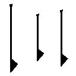
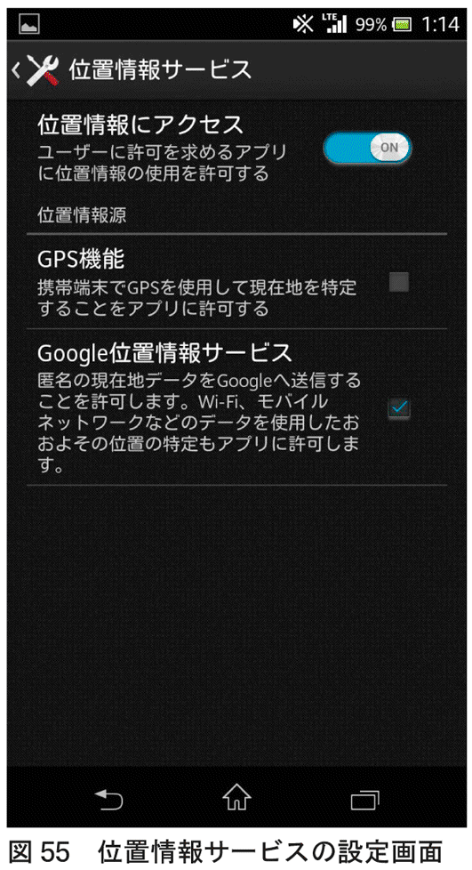

| 個人情報ダダ漏れです！ | |
| 岡嶋 裕史 | |
| (2013) | |
章扉作成 沼田健
「個人情報」って、何を守ればいいのか。何を守るべきなのか。
すごくわかりにくいです。
そもそも個人情報とは何でしょうか。
たとえば、日本工業規格のＪＩＳ Ｑ １５００１には、「個人に関する情報であって、当該情報に含まれる氏名、生年月日その他の記述などによって特定の個人を識別できるもの（他の情報と容易に照合することができ、それによって特定の個人を識別することができることとなるものを含む）」と書かれています。
個人情報保護法では、「生存する個人に関する情報であって、当該情報に含まれる氏名、生年月日その他の記述等により特定の個人を識別することができるもの（他の情報と容易に照合することができ、それにより特定の個人を識別することができることとなるものを含む）」とされています。
「個人に関する情報」で、かつ「あの人のことだ」とわかっちゃうのが、個人情報というわけです。
典型的な例としては、お役所の手続きでよく出てくる、いわゆる基本４情報（氏名、住所、生年月日、性別）が挙げられます。そのものずばりで本人のことを特定できますから、満艦飾の個人情報です。
でも、これってそんなに漏れたらいやでしょうか？
住所......は、確かに借金取りとか来られたらいやですし、生年月日も......キャッシュカードの暗証番号にしていたりすると、知られたくないなと思います。
しかし、生年月日なんか家族や友だちは知っていますし、住所も昔は電話帳に載せていたような情報ですから、すべてがすべて本気で目くじら立てるようなものではないかもしれません。
むしろ、知られて本当にいやなのは、個人に「関する」情報の方なのではないでしょうか。この表現でピンとこなければ、プライバシーと言い換えてもよいでしょう。
私も、養毛剤を定期購入していることや、「ドキドキ！プリキュア」のフィギュアを娘のためではなく、自分のために買っていることが周囲にバレたら相当いやな感じがします。
そう考える人が多いのか、ここ数年、個人情報利用の問題が大きく取り上げられるケースが増えました。
たとえば、佐賀県の武雄市図書館です。公立図書館でありながら、ＴＳＵＴＡＹＡ（ツタヤ）のＴカードを貸し出しカードとして利用でき（通常のカードも利用可）、借りるごとにポイントもつくというシステムが導入されました。それだけなら利便性の向上でめでたしめでたしなのですが、貸出情報がツタヤの母体であるＣＣＣに流れる可能性があるとして賛否両論が巻き起こっています。
貸出情報そのものは、（誰が借りたかわからない状態であれば）個人情報に該当しません。でも、貸出情報が他の情報と突き合わされることで個人を特定できる可能性はあります。もしそうなると、これは基本４情報などよりよっぽど知られるのがいやな「個人情報」ということになります。よりナイーブな情報である「どんな本を読んでいるのか」が周囲にわかってしまうわけです。
他にも、グーグルやヤフーがやっている検索連動型広告ではどんな検索をしたのかが、より精度の高い広告を行うために利用されています。検索語やその結果も、あまり人に知られて嬉しい情報ではないでしょう。これも「個人を特定しない」と言われると、現行法下では個人情報には該当しませんが、ナイーブな情報であることは確実です。仮に私のパソコンのディスプレイを他人に見られたら、広告の内容から、二次元にしか興味のない人間であることが丸わかりになってしまいます。
「個人情報は保護されるべき！」というのは、昔も今も変わらずそうなのですが、「ここを保護して欲しいなあ」とみんなが考える個人情報の範囲は、ときを経るごとにだんだん大きくなってきました。
たとえば、ちょっと前までは生きている人の情報しか保護対象にしない組織が多かったのですが（個人情報保護法にそう書いてありますから）、現在では亡くなった人の情報も保護対象に含めることが多くなりました。
さらに個人の特定だけでなく、個人が所有している端末の特定も控えるべきでは？ という意見もあります。
一方で、個人情報を収集したい！ というニーズも拡大し続けています。
人間とは、換言すれば情報です。
その人のことを知りたければ、その人の情報を収集します。
集めた情報を再構築すれば、その人のことがわかります。
当たり前のことのようですが、現在は情報のネットワーク化が進んだため、直接本人に会わなくても、膨大な量の情報を収集し再構築することができます。しかもその再構築の精度が高く、本人すら気づかなかった性癖に情報分析者が気づいてしまうことも稀ではありません。
これはビジネスになります。
質量ともにそろったデータがあれば、その人の行動を予測したり管理したりすることも夢ではありません。製品企画者であれ、営業担当者であれ、垂涎の情報でしょう。
これは政治になります。
有権者の動向を把握、管理するのは、政治家の永遠の夢でしょう。また、治安担当者にとっては、強力な対犯罪者、対テロ手段になるかもしれません。実際、米国家安全保障局（ＮＳＡ）が偏執狂的なまでの情報収集をしていることがリークされ、報道されています（＊１）。
ここでジレンマが生じるのは、個人情報を知られるのは不愉快だったり、気持ち悪かったり、現実的なリスクにすらなるのに対して、利得を生む状況も考えられるからです。
たとえば、こちらから何もアクションを起こさなくても供されるサービス。高級旅館のおもてなしのこころとは、いかに顧客の個人情報を把握して、それにあわせてサービスをカスタマイズするかに尽きますが、これからはこれが１００円ショップでもできるようになるでしょう。犯罪者は犯罪を起こす前に摘発されるかもしれません。
個人情報の保護と開示は、私たちに相反する効果をもたらします。どちらがよいのか、どこまでがよいのか、試行錯誤が続けられている状態です。
そうはいっても、自分にはあんまり関係ないぞ、という方も多いかもしれません。フェイスブックやツイッターなどのＳＮＳ（＊２）も使わないし、買い物は全部近くのスーパーだよと。
いやいや。
ごく身近なところで、会社の人事部や上司だって、私たちの個人情報を得ようと必死になっています。先ほども述べたように、個人情報は管理にも使えます。勤怠管理や機密保持のために、勤務先は私たちの情報を収集しています。
「えっ、上司が俺のあの振る舞いを実は知っているのか」と思うと怖いですよね。上司抜きの井戸端会議をこっそり覗かれていたくらいには怖いです。
そんなことしていいのか？ と思わずにはいられませんが、インフォワールドの調査結果によると、米国では２００８年の段階ですでに66％の企業が社員のネット利用を監視しており、62％の企業が就業時間中の不適切なサイトの閲覧、攻撃的な言葉によるメールが解雇に結びつく可能性があると回答しています。
日本もこの状況を後追いしているのは確実で、２０１３年６月17日号の「日経ビジネス」では「社員は見られている ここまで来た！ 〝超〟監視社会の現実」という特集が組まれています。
この特集記事では、「社員の職場でのネット利用状況をモニタリングしている企業は56・８％。従業員１０００人以上の大企業では70・６％に達した。つまり、会社員の２人に１人、大企業に限れば10人に７人は、オンラインショッピングであれ趣味の情報収集であれ、職場のネットサーフィンをすべて〝見られていた〟のである」（一般財団法人労務行政研究所、２０１０年３月「企業の情報管理に関するアンケート」）、「成績が芳しくない社員に退職勧奨する際に、過去の私的利用データをプラスアルファの材料として利用する企業は出てきている」（東澤紀子弁護士談）などと報じています。
この本では個人情報がどうしたら漏れるのか、どうやったら身を守れるのかを考えていきます。
ただ、セキュリティの話は抽象的になりがちで、あまり頭に残らないというか、身も蓋もない言い方をすれば面白くないので、できるだけ身近で具体的な話題を取り上げました。
具体的というのは、仕事中にアダルトサイトを検索すると上司にバレるのだろうかとか、パソコンで検索するとバレるのだったら、スマホはどうだとか、デジカメ写真から個人情報が漏れるというのはどういうことだとか、なんだか一度は考えたことがあるけど、どうも人には聞きづらいあれやこれやです。
真面目に仕事しているので、アダルトサイトがどうのなどと考えたこともないという高潔な方のためには、実際に起きた情報漏洩事件やありがちな情報漏洩のパターンを用意しました。
よく新聞紙面を賑わすような華々しい情報漏洩（たとえば国際的なハッキング集団の渾身の攻撃に遭ったとか、ウィキリークス（＊３）に情報が掲載されたといったもの）は、本書の守備範囲外です。
ははあ、すごいなあとは思いますが、自分にも関わってくる問題とはなかなか捉えにくいですし、それを扱った良書もたくさん出版されています。本書では、等身大のお話をしていきます。
そして、それらの事例を通じて、インターネットやホームページ、デジカメ、スマートフォンのアプリのしくみに詳しくなり、最終的には個人情報マイスターになっていただくことを企図しています。
また、気軽に読み始めていただけるよう、Ｑ＆Ａ形式にいたしました。
最初から読んでいただくことを想定してはいますが、ご興味のある箇所だけ抜き出して読んでも大丈夫です。
個人情報のことをよく知って、たのしく便利に暮らしていきましょう。
＊１ 米国家安全保障局（ＮＳＡ）元職員エドワード・スノーデンのリークで発覚。グーグル、フェイスブック、スカイプ、ユーチューブなど主要サイトから通話記録、メール、メッセージなどの情報を収集するＰＲＩＳＭシステム（US--984XN）の存在が明らかになり、オバマ大統領がその存在を認めた。オバマ大統領は、「米国民をターゲットにしたものではない」と主張したが、スノーデンは「明確に米国民のプライバシーを侵害している」と発言。
＊２ ソーシャル・ネットワーキング・サービス。コミュニティをつくる機能をもった会員制サービスくらいの意味。定義は割とアバウトで、「このサービスは定義に合致しているなあ」と思っても、慣習的にＳＮＳには含めないといったこともある。フェイスブックやツイッターが代表的と考えられるが、ツイッターのえらい人は「うちはＳＮＳじゃない」と言ってる。
＊３ 機密情報を匿名で公開できるサイト。
世 知辛い世の中ですね。いいじゃないですかね、アニメのサイトくらい。私だって、しょうもない卒業論文を読んだ後は、「超電磁砲（＊４）」でも見なきゃやってられないですよ。いや、小心者だから、ほんとにはやりませんけど。
今どきはコンプライアンスとガバナンスが重要ですから、上司さんもいろいろ監視してます。正直なところ、「余計な仕事が増えたなー」と思ってる上司さんが大半ですけど、正直を言ってしまうと立場がなくなるのが仕事の仕事たる所以です。
で、どんな監視がなされているかなんですが、それを知るためにまずはインターネットの通信のしくみを理解しましょう。
＊４ 「とある科学の超電磁砲」。「とある魔術の禁書目録」のスピンオフ作品。新井里美さんが出演されていますよ。
アニメサイトのページを見るためには、「ホームページを見せて！」というメッセージを相手のサイトに届ける必要があります。
インターネットは、宅配便のようなシステムなので、このメッセージをパケット（小包）と呼ばれる宅配便の箱の中に入れます（図１）。
このしくみは、インターネットを使うサービスであれば、どれも同じです。ウェブもメールもこのやり方で配達されます。
パケットは大きく２つの部分に分かれています。荷札（ヘッダ）と荷物（ペイロード）です。
宅配便と同じで、インターネットのパケットにもサイズ制限があるので、メッセージが長い場合には複数のパケットに分割されることもあります。ものすごく大雑把に言うと、英数字で１５００字、漢字ひらがなで７５０字くらいが１つのパケットに収まるサイズです。
パケットはメッセージを収めると、インターネットへ向けて配信されていきます。
ここでネックになるのが、インターネットがバケツリレー方式の送り方を採用しているという点です。
電話みたいなのを想像しちゃいけません。電話だとなんとなく、こんな感じ（図２）の、ないしょでうふふな模式図を想像してしまいます。実際にそれでだいたい合っていて、電話の内容を盗み聞きするのはなかなか難易度の高い技術行為です。
ところがインターネットというのは、基本がバケツリレーですから、ところどころにリレーをするための中継者が必要なのです。
ほんもののバケツリレーなら人が立つところですが、インターネットではルータという機械を使います（図３）。
自分のパソコンから、アニメのサイトまでどのくらいバケツリレーするんだろう、という疑問には、状況によるとしか答えられないのですが、最低でも図３くらいはリレーされていると思います。
実際には通信事業者の中でもいくつものルータがありますし、通信事業者をまたいでリレーされるケースもありますから、もっとたくさんになる公算が大です。試しに私の自宅からヤフーのサイトまで計ってみたら、17台のルータを経由していました。
ちなみに、インターネット上の距離を表す指標として、「相手まで何台のルータを経由するか」がよく使われます。単位はホップ、もしくはメトリックです。私の自宅からヤフーのサイトまでは17ホップの距離があるというわけです。
私たちとしては、この「中継」という単語には敏感にならなければなりません。バケツリレーを中継する人が、バケツの中身を覗き込むのが簡単なように、郵便配達のおじさんがはがきの文面を見てしまうのが容易なように、中継機器であるルータはすべてを知ることができます。だって、見てみなければ、次にどこにリレーしていいかもわかりませんから。
ですから、上司の立場で言うと、ルータを監視すれば部下の通信を監視できることになります。図３で仕込むとしたら「全社を統括しているルータ」でしょうか。ここには、インターネットとやり取りするすべての通信が集まります。
たとえば、１Ｆから１Ｆへの通信だと、１Ｆを統括しているルータを経由するだけで届くわけですが、社内で完結する通信ならまあいいだろうという姿勢です。まあ、社内間通信を監視している会社も多々ありますが。
問題は、パケットがどの程度詳細に見られているかです。
先にも述べたように、やろうと思えば全部の中身を見ることが可能なのですが、ルータというのはそれほど暇ではありません。自分を通過していくパケットを開封して、中身を見て......、というのはルータにとってもひと仕事で、全部のパケットに対してそれをやろうとすると、とんでもない仕事量になります。
下手をすると、それが原因で通信が滞ったり、もっと性能の高い高価なルータが必要になったりします。
予算も時間も情熱もない......、といった場合によく採られるのが、「荷札だけ見る」検査方法です。これだと、パケットを開封して、全部の荷物を検査して......とやるよりは圧倒的に手間が省けるため、簡易的な検査としてはよく行われます。
そして、ここが重要なのですが、インターネットで荷札に書くべきお約束として決められているのは、次のようなものです。
・自分のパソコンのＩＰアドレス
・相手のサーバのＩＰアドレス
・荷物の大きさ
他にもいろいろありますが、私たちに関わってくるのはこの辺です。
ＩＰアドレスというのは、よく新聞などに解説があるように、インターネット上の住所を表しています。前半と後半の２ブロックに分かれ、前半でどこのネットワークか（どこの会社か、とだいたい同義）、後半でそのネットワークの中のどのコンピュータかがわかるしかけになっています。
この情報は隠匿のしようがありません。
宅配便の集荷に来てもらうときに、「宛先がちょっと恥ずかしいところだから、マジックで消しておきたいぞ」とかやってしまったら、配達の人が読めなくて届けられません。
そう、インターネットのしくみにおいては、上司は「配達の人」の陣営に属しているのです。これは相手が悪いです。荷札を熟読するも、箱を開けて検査をするも、基本的には思いのままです。
まてまてまて......、検査をして送り先のＩＰアドレスがわかるっていっても、ＩＰアドレスってあれだろ、124.83.171.240とか宇宙語っぽい数値の並びだろ、うちの上司がそれを見てどこの会社のどのサーバかわかるとは思えないぞ。
そう蜘蛛の糸にすがりたくなるところです。
しかし、インターネットにはＤＮＳという実にお節介なしくみがあって、ＩＰアドレスをＦＱＤＮ（www.kobunsha.comとかいう、例のアレ）に変換してくれるサービスを大々的に展開しています。名前を入れると電話番号を表示してくれる電話帳とそっくりです。
自宅のコンピュータで試してみました（図４）。124.83.171.240という住所を持つコンピュータは、www.yahoo.co.jpの名で知られていることが丸わかりです。
こうなると、
jp → 日本の
co → 営利組織の
yahoo → ヤフーという会社にある
www → wwwと名前のついたコンピュータ
に何か送ったことがバレバレですから、なかなか言い逃れがむずかしくなります。
というわけで、仮に仕事中にufufu.ehehe.or.jpなどというサイトを見に行ったとすると、上司には、「ほぅほぅ、日本の非営利組織であるeheheという組織内のufufuというコンピュータと通信したのだな。それはそれはさぞ業務に必要な通信だったのだろう」と評価されることになります。
もちろん、「忙しいから通信記録（ログ）なんて残してないよ」とか、「記録は取ってあるけど、いちいち検査する時間なんてないよ」といった会社もとっても多いです。でも、何かあったときのために、記録だけは残しておく会社が多数派になっています。そして、記録が残っているということは、何かあったときには遡及して検査されるということですから、「いつもアダルトサイトを見てるけど、何も言われないからきっとうちは大丈夫なんだろう」とは思わない方がいいです（ログの活用についてはＱ12を参照）。
コンピュータは、一度取った記録は忘れてくれませんからね。
・インターネットのメッセージは、パケットと呼ばれる宅配便の箱のようなもので運ばれます。
・パケットは、これまた宅配便同様、荷札（ヘッダ）と荷物（ペイロード）部分に分かれます。
・パケットのサイズには決まりがあり、メッセージが長いと複数のパケットに分割されます。
・インターネットはこのパケットをバケツリレー方式で運びます。
・バケツリレーなので中継点があり、その役割を担う機械をルータといいます。
・中継点（ルータ）を監視すれば、そこを通過するすべての通信を監視することができます。
・恥ずかしいからといって、パケットの荷札（ヘッダ）の宛先を隠すことはできません。
・簡易的な検査として、荷札（ヘッダ）のチェックがよく行われます。
・インターネットにはＤＮＳというお節介なしくみがあり、数値の並びであるＩＰアドレスを、具体的なサーバ名（ＦＱＤＮ）に変換してくれます。
ア ダルトコンテンツですか。地雷ですね、いろんな意味で。やっぱり会社で見ちゃまずいでしょう。家で見ましょうよ。ってゆうか、技術的なことは抜きにして、誰かにディスプレイを覗かれるだけでもまずいじゃないですか。
......それでも知りたいですか。あー、過去に見たんですね。それで、記録に残ってるかどうか知りたいと。ええ、そうですね。気になりますよね。
結論から言うと、わかりますよ。
Ｑ１での議論を思い出してみてください。
通信している相手の情報は、インターネット上でやり取りされるパケットの荷札部分に書かれるから、誰でも見ることができました。
たとえば、残業のお供に見てやろうと思ったサイトが、x--video.uhauha.tvなどというわかりやすいＦＱＤＮを持っていたとします。
ここのページを閲覧するためには、「ホームページを見せておくれよ！」というメッセージを収めたパケットをこのコンピュータ宛てに送信する必要がありますが、その際パケットに貼り付けられる荷札があります。ヘッダと言いました。
ヤマト運輸にしろ日本郵政にしろ、宛先を書かずに目的地にモノを届けてくれるほど気が利いてはいません。これはインターネットの通信でも当然そうで、ヘッダには宛先ＩＰアドレスが極彩色で記入されています。
この時点で、どのサイトを見に行ったかはバレバレです。
「でも、荷札には宛先のＩＰアドレスが書いてあるんだよね？ うちの上司はキューピーもＩＰも区別つかないよ」というご意見も伺います。
確かにＩＰアドレスは２進数で32桁、
11000000 10101000 00000000 00000001
人間向けにわかりやすく10進数で書き直したとしても、
192.168.0.1
といった謎の数値の羅列です。上司がよく意味を理解していない可能性は充分にあります。むしろ、この数値を見て「おお、うちの部下はuhauhaサイトを見に行ったな」と瞬時に洞察する上司がいたら軽い悪寒を覚えます。
しかし、それはきゃっきゃうふふな桃色コンテンツが見放題であることを意味しません。前にも登場しているＤＮＳという非常にお節介なサービスがあるので、ＩＰアドレスはあっという間にＦＱＤＮに変換（名前解決という）されてしまいます（図５）。
ならば、キャッシュを閲覧するのは如何か、というご意見も多数承ります。どこかに突破口はないかとあらゆる手を尽くすあくなき探求心に脱帽です。たしかにキャッシュを使うのは一つの手です。
キャッシュというのは、コンピュータの動作を高速化するための記憶階層のことです。たとえばハードディスクキャッシュというのがあります。
コンピュータの中核をなすＣＰＵはとても動作の速いものです。一方で、コンピュータの書架とも言えるハードディスクはＣＰＵと比較すると異次元の遅さで動きます。
これは不幸です。
ＣＰＵはハードディスクへの保存指示など瞬時に出し終わるのに、ハードディスクに情報が保存されるまでいらいらしながら待ち続ける羽目になります。ディスプレイの前の私たちも待たされます（図６）。
そこでキャッシュというのが作られます。
ＣＰＵは、今度はハードディスクではなくキャッシュに情報を保存するよう指示を出します。キャッシュはハードディスクとは比較にならない速さで情報を保存できるので、すぐさま次の仕事に移れるわけです。
ＣＰＵが次の仕事をしている陰で、キャッシュからハードディスクへとゆっくりゆっくり情報が転送されていきます（図７）。
だったら最初から全部キャッシュにしろよと思いますが、保存量あたりの単価が高いとか色々あってこのようなしくみになっています。
キャッシュは速度差のある機器間をつないだりするときに有効なので、このハードディスクの例にとどまらず、さまざまな場面で使われています。
たとえばホームページを閲覧するウェブのしくみもそうです。
検索エンジンで図８のような表示をご覧になったことがあるでしょうか。

検索エンジンで「光文社」を検索した結果なのですが、「キャッシュ」と書かれた部分があります。
検索エンジンは、目的のページへのリンクを示してくれるので、ふつうに「光文社」と書かれた部分をクリックした場合には、検索エンジン→光文社というふうにページを訪問することになります（図９）。
ところが、検索エンジンは自分の「キャッシュ」に光文社のページのコピーを保存しています。検索結果の「キャッシュ」の部分をクリックすると、光文社にあるオリジナルではなく、検索エンジン内にあるコピーの方を見ることができるのです（図10）。
こうすれば、通信記録が残るのは検索エンジンに対してですから、光文社と通信した事実は上司から隠蔽できそうです。
......ところが。
残念なことに、この方法でも遊んでいたことがバレるケースがあります。
パケットの検査は今まで主にヘッダについて行われていたのですが、「やっぱり中身も検査しないと危ないよね」ということで、パケットのペイロード部分も検査されるようになってきました（図11）。
こうなると、アダルトコンテンツはほぼアウトです。なんせ中が見られてしまうわけですから、○○○や▲▲な×××といった単語が含まれていれば一目瞭然です。
仮に隠語を駆使するなどして単純なキーワード検索に引っかからない工夫をしているサイトがあったとしても、ホームページのデータなどではリンク先の情報なども参照されます。妙なサイトへリンクがいっぱい張られていたら、やっぱり検出されてしまうわけです。
図12は光文社のホームページのデータです。サーバとパソコンの間でやり取りされるデータは、ブラウザを通して目で見るよりもたくさんの情報を含んでいることがわかります。
この情報があるからこそ、クリックしたときに別のページにジャンプしたり、広告を表示できたりするわけですが、上司にとっては格好の検査対象となります。
業務中のネットサーフはほどほどにしましょう。
・会社で業務に関係のないサイトを見るのは、ディスプレイを覗かれるだけでもまずいです。
・キャッシュとは、コンピュータの動作を高速化するための記憶階層のことです。
・検索エンジンは自分のキャッシュに、オリジナルのホームページのコピーを保存しています。
・検索結果の「キャッシュ」の部分をクリックすると、オリジナルではなく、検索エンジン内にあるコピーの方を見ることができます。
・最近はパケット通信の荷物（ペイロード）も検査されるようになったため、たとえキャッシュだけを閲覧していたとしても、おイタがバレます。
ま たアダルトサイトですか。
確かに上司に怒られる原因№１って言いますもんね。気になります。わかります。昨今は、スマホやタブレットの普及でＢＹＯＤも流行ってますし、私物ならいいじゃないかという気持ちにもなるってもんです。
でも、バレますよ。
まず、ＢＹＯＤの話から始めましょう。
10年前の常識だと、会社で業務に使う機器と家庭で私用に使う機器は混ぜちゃだめでした。混ぜるな危険というやつです。業務で使うデータを家庭に持ち帰ったら子どもが流出させちゃったとか、私物のパソコンを会社に持ち込んだら会社中のパソコンにウイルスを感染させちゃったとか、いろいろな悲喜劇が繰り返されてきたのです。
ところが、スマートフォンなどという個人に極めて寄り添った形式の情報機器が登場すると、この「10年前の常識」がいかにも杓子定規になってきます。
一般論ですが、情報は集約してこそ価値が高まるものです。
たとえば、会社のパソコンで使う住所録と家のパソコンで使う住所録をいちいち分けて作るのは二度手間です。それでも、パソコンが別々ならまあ仕方がないかと割り切りますが、スマホを別々にするのは面倒です。せっかく持って歩けるのに、会社用と家用を持つ......、住所録に登録されている人だってけっこうオーバーラップしているのに......、っていうか最近はクラウドで統一されてるから２つに分ける方がめんどくさいのに......、とくれば「じゃあ一緒にしちゃおう」という話が出てくるのは自然の成り行きです。
この流行のことをＢＹＯＤ（Bring Your Own Device：お前のスマホを持ってこいや）と呼びます。ＩＴ業界特有の残念な４文字造語なので、綴りとかはどうでもいいです。大事なのは私物を業務用に持ち込んでいいよ、という発想の転換の方です。
ＢＹＯＤにはいくつかメリットがあります。
まず、会社は携帯の支給費用と通信費用を削減できます。従来型携帯（フィーチャーフォンって、定着したのかしないのかわからない用語ですが）を業務に使う場合、結構な割合で会社がこれを支給し、毎月の通信費についても負担してきました。社員が私物のスマホを業務に使ってくれるのであれば、これらの負担がなくなります。
おいおいおい、それじゃあ業務用の通信費用を社員が負担する羽目になるぞ、とも思いますが、スマホは（現在のところ）九分九厘の利用者がデータ通信を定額料金制で契約しているため、個人の持ち出し分が増える危惧はありません。
社員はどうでしょう。
業務用の通信を私物でまかなっているわけで、なんだか損した感がありますが、実質的に通信費が増加するわけではありません。また、会社が支給する通信端末はたいていしょぼいので、多機能でデザインもよく使い慣れた一般利用者向けの情報端末が業務に使えるのであれば、生産性が上がると考えるケースが多いです。仕事とプライベートで人間関係が重複しているような場合では、住所録や電話帳の二重管理も解消できます。
で。ここからです。
互いにメリットがあるので、密かに流行中のＢＹＯＤですが、もとが私物だということを忘れちゃいけません。
まず私物だと、ウイルス対策とかいいかげんですよね。セキュリティなんて直接的に楽しかったり便利だったりするわけではない（むしろ不便になる）から、私費を投じたくないですし。だから、スマホというのはパソコン相当の機械であり、使う以上はパソコン以上に気をつけなければならないのに、私物スマホのウイルス対策ソフト導入率は半数以下にとどまります。
加えて、家にある膨大なＡＶコレクションをスマホで閲覧した痕跡だとか、動画サイトからダウンロードしてきた18禁動画だとかがスマホに丸々残っていたということは多々あります。それを取引先にでも忘れてきたら恥ずかしいです。
それだけならロックでもかけておけばいいわけですが、スマホを使った通信そのものも上司に管理されている可能性があります。
スマホの電波を上司が傍受している？
それは相当高度な技ですね。上司すごすぎです。っていうか、上司の行動の方がグレーゾーンな気がします。いろんな意味で。
ＬＴＥ回線（＊５）などの携帯電波は傍受しにくいです。会社もそこまで管理してません。でも、スマホはＬＴＥ回線だけでネットワークと接続するわけではありません。
そう、Ｗｉ―Ｆｉ接続です。
＊５ Long Term Evolution、次世代携帯回線。３Ｇ（第三世代回線）の後継。第四世代がなかなか登場しないので、３・９Ｇなどと呼ばれていたが、最近この名前で定着した......と思っていたら４Ｇと呼ばれ出した。本来想定していた４Ｇとは違うのだが、国際電気通信連合が「もうこれを４Ｇと呼んじゃっていいよ」と言ったためである。
Ｗｉ―Ｆｉというのは、無線ＬＡＮの規格です。会社や家など構内でネットワークを組むときのＬＡＮ（ローカル・エリア・ネットワーク）を無線化したものです。無線にすると、美観を損ねませんし（私はケーブルが這いずり回っている部屋を美しいと思いますが）、パソコンの配置換えなども簡単なので、近年大流行です。
ただ、無線ＬＡＮは有線ＬＡＮに比べるとつながりにくかったというか、「ケーブルを差し込むと取りあえず通信できる」というふうにはできなかったので、市場に出回った当初はいろいろトラブルがありました。メーカーＡとメーカーＢの組み合わせだと通信できないとか。
そこで、Ｗｉ―Ｆｉアライアンスという団体ができて、「Ｗｉ―Ｆｉマークのついている機器同士だったらつながりますよ。安心して買ってください」とやったわけです。Ｗｉ―Ｆｉは無線ＬＡＮの普及にとても貢献しました。
スマホは携帯用のＬＴＥ回線が使えるのに、なぜＷｉ―Ｆｉでもネットワーク接続できるようになっているのでしょう。理由は主に２つあります。
①Ｗｉ―Ｆｉの方が速い
②データオフロード
①は速度の問題です。
携帯の電波は数キロメートルの距離で通信する能力があります。一方で無線ＬＡＮは１００ｍ程度の範囲をカバーします。どちらも電波を使った通信を行いますが、異なる技術です。
携帯電話の通信速度は、ＬＴＥ（ドコモのＸｉ〈クロッシィ〉など）で名目１００Ｍｂｐｓ（＊６）前後です。一方、Ｗｉ―Ｆｉの最上位規格であるIEEE802.11acは名目値で７Ｇｂｐｓ（７０００Ｍｂｐｓ）の通信速度をたたき出します。
条件にもよりますが、70倍の速度差があるわけで、「屋内ではＷｉ―Ｆｉ通信に切り替えた方が、携帯の電波を使うより速いですよ」となるのもうなずけます。
②の方はさらに切実な理由です。
電波というのは有限の資源で、下手をすると石油よりも先に枯渇します。何せ、同じ周波数同士がぶつかると干渉してしまう（家の中でＷｉ―Ｆｉ通信をしているときに、電子レンジを使うと切れてしまうことがあります。同じ周波数帯を使っているのです）ので、ココはテレビ、ココはラジオ、ココは携帯電話と決めておかねばなりません。
今はほとんどの周波数において使い道が決まっていて、もう割り込む余地がありません。「新しく携帯電話用に使っていいですよ」なんて周波数が現れると、「プラチナバンド」などと呼ばれ、各通信会社が群がる（＊７）のはそのためです。
最大割り当てが決まっているわけですから、通信会社はそれを有効活用するしか道がありません。特にスマホが登場してからは、通信量はうなぎ登りで、「今持っている周波数では足りなくなる」と通信会社の幹部が顔色を青くしています。
そこで、「屋内ではＬＴＥ回線使わないで！ Ｗｉ―Ｆｉを使って！」となるわけです（図13）。
Ｗｉ―Ｆｉの方は、そもそも最大で１００ｍほどしか届かない技術ですから、数軒離れた家同士であれば、同じ周波数を使ったとしてもあまり干渉しません。細かい範囲で周波数の使い回しが効くわけで、こちらの方が余裕があります。
最近、駅やカフェにいくと、「Ｗｉ―Ｆｉ対応」などと張り紙があって、Ｗｉ―Ｆｉ接続ができるようになっているのは主にこうした理由です。
今までＬＴＥ回線を使っていたようなケースでも、Ｗｉ―ＦｉやＷｉＭＡＸといった周波数に余裕のある技術で迂回ルートからインターネットに接続してほしいのです。このことをデータオフロードと呼びます。
＊６ ｂｐｓ（ビット・パー・セコンド）、１秒で何ビットの情報を送れるか。この場合は、１秒で１００メガビット送れる。そこで、「ほほぅ、１秒に１００メガか。じゃあ、手元にあるこの２００メガのファイルは２秒で送れるな」と考えると全然送れない。理由は２つ。保存系で使われるバイトと、通信系で使われるビットは違う単位で、１バイト＝８ビットであること。通信はノイズが入ったり混んだりするので、名目値と実測値が全然違うこと。ではなぜバイトなどというややこしい単位を作ったか？ １バイトは英数字１文字分の情報に相当する。８００ビットと言われてもよくわからないが、１００バイトと言われると「ああ、英数字１００文字分くらいか」と想像がつく。
＊７ ２０１２年にソフトバンクが取得したのが記憶に新しい。それまで同社が持っていたものよりつながりやすい周波数なので、こう呼ばれる。
そんなこんなでほとんどのスマホはＷｉ―Ｆｉ接続ができるようになっています。そして、会社があなたの私物スマホを受け入れる場合、Ｗｉ―Ｆｉ接続をさせることでしょう。
これは会社が通信会社に協力してデータオフロードを推進しよう、ということではありません。理由は２つ。
①ＬＴＥ回線を経由されると、対外通信量が増える
②検疫したい
最初の理由ですが、ＬＴＥ回線を使って会社のサーバへアクセスする場合、スマホで発生する通信は通信会社を経由して、インターネットから会社へやってくることになります。当然、「遅延」といって、通信時間が増大します。
また、会社とインターネットは通信会社に頼んで回線を引いているので、この部分の通信量は増やしたくありません。あまり増えると回線の増強を考えざるを得なくなりますが、その際、自前のケーブルとは比べものにならないランニングコストが発生します（図14）。
一方、Ｗｉ―Ｆｉ接続をする場合は会社の中に自前のアンテナを立てて、会社のＬＡＮに通信を経由させることになります。
いろんなところをぐるぐる回ってきたりしないので通信の遅延が小さく、スマホによる通信量の増加があっても小さなコストで吸収できます。いい感じです。
問題は２つめです。
ノートパソコンの登場以来、会社のシステム管理者は悩んできました。いわく、「がんばって会社を清潔な状態に保っても、社外に持ち出したノートパソコンが悪い遊びをして病気をひろってくる」。
管理の届かない社外で羽目をはずされてしまうという極めてもっともな理由なのですが、これは結構深刻な問題で、会社によってはノートパソコンの社外持ち出し禁止などを打ち出すところもありました。何のためのノートパソコンかと思いますが、それくらい深刻だったわけです。
それだとさすがに仕事にひびくので、ひねり出された考え方が検疫ネットです。検疫ネットというのは、ようするに隔離部屋で、スマホなどを会社に持ち込むときはまずそこに入らなければいけません（図15）。
ひとたび検疫ネットにつながると、このスマホはウイルス対策してあるのか、現時点でウイルスに感染しているのではないのか、あやしいアプリは入っていないか等々について、根掘り葉掘りチェックされます。管理者のさじ加減一つで、桃色画像が入っているかどうかまでチェック可能です。そして、このチェックでお墨付きがもらえなければ、スマホは社内ＬＡＮに接続させてもらえません。
おそろしいですね。私物で快適に業務ができるぞ、と思っていたらけったいな性癖が上司に筒抜けになっていた可能性もあるわけです。
さらにやっかいなのが、ＭＤＭ（Mobile Device Management：携帯端末管理）という概念が出回り始めたことです。
検疫ネットは基本的に「会社のネットワークにつなぐとき、検査される」感覚なのですが、ＭＤＭだと「仕事で使う携帯端末はクリーンに！ あくまでクリーンにしなくちゃ！」という思想のもと、社外にいるときまでＬＴＥ回線を使ってスマホの状態がチェックされます。
もちろん、落っことしたときに場所がわかるとか、ロックをかけるとか、強制的に内容を消去するとかいったことができるので、とてもとても安全になります。あぶなそうなアプリはインストールさせてくれないので、詐欺に引っかかる可能性も減るでしょう。ＯＳやアプリのアップデートを忘れていても、ＭＤＭが勝手にやってくれるかもしれません。セキュリティ的にはいいことずくめなのですが、もともと私物だったことを考えるとなんだか不自由になった気もします。
アダルトサイトくらいなら、まあ見て見ないふりをする会社も多いのですが、業務中の息抜きはほどほどにしましょう。
・ＢＹＯＤとは、私物のスマホを業務用に持ち込んでもいいよ、という意味です。
・Ｗｉ―Ｆｉは無線ＬＡＮの規格のことです。
・Ｗｉ―Ｆｉの方が、ＬＴＥ回線よりも通信速度が速いです。
・電波は有限のため、通信会社はなるべくＷｉ―Ｆｉ接続をしてほしいと思っています。
・会社も、社内ではなるべくＷｉ―Ｆｉ接続をしてほしいと思っています。
・私物のスマホを会社の無線ＬＡＮにＷｉ―Ｆｉ接続すると、中身を覗くことが可能です。
・スマホを社内に持ち込む前に、検疫ネットへの接続を要求する会社もあります。
・ＭＤＭ（携帯端末管理）の考え方によって、社外でも私物のスマホの中身をチェックされる日がくるかもしれません。
あ なたも好きですねえ。
いったい何の動画ですか。桃色動画？
「ロウきゅーぶ！」（＊８）ですか。それはある意味、桃色動画以上にまずいかもしれません。
......それはそれとして、会社のサーバを補助記憶装置代わりに使っちゃだめですよ。
最近、補助記憶装置は安いですから、会社のサーバは使い切れないほど広大な記憶空間を残しているかもしれません。そこにこっそり「○○業務用」などとそれらしいフォルダを作って私用ファイルを入れておいたら、ウチのハードディスクやブルーレイを節約できるぞ！ と実際思います。でも、バレますって。
まず、会社のサーバは監査用のプログラムを走らせています。監査プログラムにしてみれば、ファイル名は全然どうでもよくて、ファイルの属性や中身でチェックをしますから、渾身の偽装工作はなんの効果も発揮しないことになります。ごまかせるのは上司の目チェックだけですね。
で、社内でバレるくらいならまだ可愛げがありますが、ことによると家族写真や運動会動画が世界へ向けて配信されることがあるので、注意が必要です。
恥辱写真世界公開への道のりを追体験してみましょう。
＊８ 小学校の女子バスケ部を描いた作品。と書けば何てことはないのだが、コーチ役の主人公は「小学生は最高だぜ！」と叫ぶ。解釈のしようによっては、いろいろ危険である。
まずは、ウェブサーバのしくみからです。
これはいわゆるクライアント／サーバ・システムというやつで、クライアントが「ホームページが見たいよ！」とリクエストして、サーバがホームページを送ってくれるしくみになっています（図16）。
このリクエストとレスポンスのしくみはとてもシンプルです。
コマンドプロンプトというウィンドウズに付属のツールを使って、ヤフーのホームページを見せてもらうプロセスを体験してみましょう（操作方法はウィンドウズ７を想定していますが、ビスタ、ＸＰをお使いの方もほぼ同じ手順でお試しいただけます）。
コマンドプロンプトは、スタートボタン→アクセサリ→コマンドプロンプトとクリックしていくと起動できます。
まず、
telnet www.yahoo.co.jp 80
とタイプします（図17）。
telnet（＊９）は他のコンピュータにつなぐための命令で、www.yahoo.co.jpがつなぎたいコンピュータ、80がそのコンピュータ内のどのソフトにつなぐかの識別番号になっています。
この番号はソフトを動かしたときにランダムに割り当てられるのですが、ウェブサーバソフトがランダムな番号だと接続しにいく人が困るので、80番を使うことが世界的に取り決められています。
エンターキーを押すと命令が実行され、ヤフーのコンピュータにつながるので、
GET /
と入力してみます。
ヤフーのウェブサーバ内には当然多くのページが保存されているわけですが、その中でもヤフーが最初に見せようと決めているトップページをもらおうとリクエストします。
すると、図18のように、ヤフーのウェブサーバがトップページのデータを送ってくれます。普段見ているホームページとは似ても似つかないものですが、これがホームページの元になる情報です。
これはＨＴＭＬという言語で書かれていて、「ここには画像を入れる」「ここは文字を大きくする」「ここを押すと、指定のページにジャンプする」など、ホームページに欠かせない各種の決めごとが整理して書いてあります。
コマンドプロンプトは単純なツールなので、それをそのまま見せていますが、ホームページを見るためのソフトであるブラウザ（たとえば、ウィンドウズに付属のインターネットエクスプローラや、アイフォンのサファリ）だと、ここにある指示の内容通りにページを作って見せてくれるわけです（図19）。
＊９ telnetは管理者向けのツールなので、初期設定では使えないようになっています。コントロールパネルの「Ｗｉｎｄｏｗｓの機能の有効化または無効化」で、telnetクライアントにチェックを入れると使えるようになります。
ブラウザを使ってホームページを見る場合は、こうした手続きは省略して単にアドレス欄にＵＲＬ（ユニフォーム・リソース・ロケーター：ネット上のどこに資源〈この場合はホームページ〉があるかを表す統一記法）を記入します。
ＵＲＬの書き方は次のようになっています。
スキーム（手段）：アクセスしたいもの
たとえば、mailto:info@kobunsha.com であれば、アクセスしたいものはinfo@kobunsha.com というメールアドレスです。このアドレスにアクセスするための手段としては、mailto すなわちメールを使うべきであることがわかるしくみになっています。
ホームページのある部分をクリックするとメールが出せたりしますが、そのときにこの表記方法が使われています。
よく見かける、http://www.yahoo.co.jp/index.html というのを分解してみると、httpがスキームで、//www.yahoo.co.jp/index.html がアクセスしたいものです。
httpはホームページを見るためのお約束だと考えてください。
このスキームが使われた場合は、「：」以下は次のような意味を持ちます。
//コンピュータ名：ポート番号 /パス
たとえば、www.okajima.bizというウェブサーバのトップページtop.htmlに接続したい場合にはこう書きます。
http://www.okajima.biz:80/top.html
しかし、実態としてはポート番号をここに書くことはしません。
ポート番号というのは、あるコンピュータのどのソフトにつなげばいいのか、ソフトを識別するための番号だと考えてください。www.okajima.bizやwww.yahoo.co.jpは、あくまでコンピュータを示す名前であって、そのコンピュータの中で多数動いているであろうソフトまでは指定していません。
そのため、ポート番号が書いていないと、通信を受け取ったコンピュータは困ってしまうのですが、ウェブサーバソフトの場合は、先にも述べたように80番を使おうという世界的な決まりがあるので、省略してもブラウザが自動的に足してくれます。だから、一般的に見かけるアドレスはこのような形になります。
http://www.okajima.biz/top.html
（www.okajima.bizコンピュータ内のtop.htmlファイルが見たい）
このtop.htmlというホームページの元になるファイルは、コンピュータのどこに保存されているのでしょうか？
別にどこでもいいのですが、一般的には奥まった場所にあるのだと思います。Ｃドライブ内のProgramFilesフォルダにあるwwwrootサブフォルダの中とか。
でもそれをいちいち、
http://www.okajima.biz/c:/ProgramFiles/wwwroot/top.html
などと書くのはいかにもめんどうです。
そこで、複雑なフォルダ構造は隠蔽できることになっています。
図20のように決めたら、ホームページを見に行く人は、「Ｃドライブの、ProgramFilesの、wwwrootの」という部分は省略して、いきなりwwwrootの中身の何、から書き始めることができます。
だから、top.htmlファイルがどんなにすみっこのフォルダに押しやられていても、http://www.okajima.biz/top.htmlと短めに書くことができるのです。
ここで問題が生じます。
あるウェブサーバの中で、最初に見るべきページのファイル名は（厳格な決まりがあるわけではないのですが）だいたい相場があって、
index.htm
index.html
top.htm
top.html
homepage.htm
homepage.html
などにされています。
なるべくわかりやすくするように運用上の工夫でこうなったのですが、変に種類があるので、間違えてしまうことがあります。そのときは、おなじみのエラーが出てきます（図21）。
404 Not Foundエラーというやつです。
ホームページをやり取りする上でのエラーは数字で表すのですが、次のように百の位を見るだけでだいたいの原因がわかるようになっています。
１００番台 情報の提示
２００番台 成功しました
３００番台 追加の処理が必要です
４００番台 エラーで、原因はクライアント側にあります
５００番台 エラーで、原因はサーバ側にあります
エラーコード４０４番で、「指定のホームページが見つからなかった（きっとＵＲＬを打ち間違えた、あるいは古いＵＲＬをタイプした）」ことを知っていなくても、４００番台→どうも自分の方に間違いの元があるらしいぞ、とわかるだけでもトラブルシューティングがしやすくなります。
ここでホームページの提供側（サーバ側）の事情も考えます。
あまり打ち間違いが起こると、ホームページを見に来る人が減ってしまうかもしれませんし、そもそもホームページのＵＲＬが長いと覚えにくいです。
そこで、パス（そのサーバの中のどこにある、なんていう名前のファイルか）の部分は省略できることになっています。
たとえば、
http://www.okajima.biz/
のように省略します。
そうすると、この中には「どのページが見たい」といった情報は含まれないことになりますが、www.okajima.bizサーバの管理者が設定した既定のページが送られてくることになっています。
で、重要なのがこの先です。
ホームページを見たい人が「このページ」と指定せず、管理者が「既定のページ」も用意していない場合は、やはり先ほどと同じように404 Not Foundエラーが出るはずなのですが、ウェブサーバが「その場合は、フォルダの中身一覧を表示して、利用者にファイルを選んでもらおう」などという設定になっていると、ウェブサーバは世界へ向けてすべてを暴露します。
実例を示すと、このようになります（図22）。
ここまであけすけになっていなくても、公開フォルダに置いたファイルは常に見られる可能性があります。トップページからリンクが張られていなくても、検索エンジンが満艦飾の派手派手しさで検索結果に表示するかもしれませんし、わかりやすいファイル名をつけていると、利用者に類推されて直接ファイル名を指定したＵＲＬで閲覧されるかもしれません。
ちょっと会社の補助記憶装置を間借りしただけのつもりが、私的ファイルの世界配信へつながりかねません。
いくら何でも、公開用のフォルダに間違ってファイルを保存するなんて......と思いますが、実際にこのパターンで機密情報が漏れたケースは多々あります。
セキュリティのうるさ型で知られる米商務省は、機密情報保護を目的に設置したサイトで機密情報を世界配信したことがありますし、わが国の国土地理院も、ＧＰＳデータをダウンロードした人の連絡先や利用目的を誰でも閲覧できる状態にしていたことがあります。
私的利用でなくても、「正規の手順や場所を守ると手間がかかるから、ちょっと別の場所に保存しておこう」と考えるのはやめておきましょう。
・ホームページはＨＴＭＬという言語で書かれています。
・インターネットエクスプローラやサファリというブラウザを使うことで、ＨＴＭＬで書かれたページをちゃんと見ることができます。
・ＵＲＬは、いろいろなものを省略して書くことができます。
・404 Not Foundエラーは、指定したホームページが見つからなかったことを意味します。
・ウェブサーバの設定によっては、世界に向けてすべてを暴露することもありえます。
だ からダメですって、カラ出張しちゃ。背任行為じゃないですか。
え？ 会社は騙してない？
あぁ、奥さんにバレたんですね、ははぁ。上司より怖そうですね。
ちゃんとアリバイ写真も用意したのに？
それが原因ですね。たいてい余計なことするとバレるんですよ。
写真はいろいろなことを語ります。
別に比喩ではなく、直接的な話です。
写真を撮るときって、いろんな情報が発生しますよね。遠い昔は写真を撮る度に、レンズだの絞り値だのシャッタースピードだのを書いて記録したりしていました。
で、せっかくデジカメの時代になったので、その辺の情報も自動で記録しちゃおうよと目論んだ人たちがいました。言い出しっぺは富士フイルムさんです。だから、カラ出張の件は、恨むなら富士フイルムさんを恨んでください。
まあ、撮影時の状態が記録されていれば、最適なプリントを得やすいですから、発想としては自然だと思います。後からアルバムの整理などをするときにも都合がいいです。
デジカメなんてレンズのついてるコンピュータですから、情報の記録はお茶の子さいさいというか本業です。私たちがあくせく記録を残さなくても、がつがつ情報を溜め込んでくれます。この「がつがつ」の部分が問題で、私たちが想像する以上の情報がデジカメの写真には詰め込まれているのです。そのため、「写真」を公開するつもりだったのに、自ら「個人情報」を公開していた、なんてことになりかねません。
では、デジカメはどんなふうに情報を溜め込んでいるのでしょうか。
項目だけを列記すれば、絞り値、ＩＳＯ感度、シャッタースピード、露光補正、測光モード、撮影機器、解像度などの撮影にまつわる基本情報に、撮影時刻、撮影方向などの付帯情報が加わって写真の画像ファイルに埋め込まれています。これをＥｘｉｆ情報というのですが、そんなことを言われてもいまいちピンとこないと思います。
こういうのは実際に見てみるのが一番なので、見てみましょう。
Jeffrey's Exif Viewerというサービスにブラウザでアクセスしてみます。ＵＲＬはhttp://regex.info/exif.cgiです（図23）。
英語で説明が書いてありますが、「分析したい写真はどこにあるんだ？」と聞かれています。
ウェブにある場合は、上の空欄に写真のＵＲＬを記入して右にあるボタンを押します。自分のパソコンにある場合は、「参照」というボタンを押してパソコン内のファイルを選んでから、右側のボタンを押します。
ここでは、東京タワーを撮った写真を分析してみました。
すると、こんな画面が（図24）。一瞬で解析してくれます。おっかないですね（Ｅｘｉｆ情報は多岐にわたるので、一部を抜粋して掲載しています）。
上から主な項目を読んでいきましょう。
まず、画像のサイズは３９２０×２２０４ピクセル（画素）です。９００万画素弱の写真ですね。
写真を撮ったカメラはソニーのＳＯＬ21、エクスペリアで、最後に手を加えたのは２０１３年８月27日で、露出時間は１／２５０、絞り値は２・４、ＩＳＯ感度は50です。オリジナルを撮影したのは２０１３年８月27日で、最終更新日時と一致しますから、その後手を加えてないみたいです。フラッシュは焚いていなくて、焦点距離は４・５㎜......。
へぇーっ、と思います。便利だなあ！ と。
まあ、このくらいでも人によっては、「違う日に撮った写真だとバレちゃったぞ。俺様の完璧なアリバイ工作がバレてしまった！」と嘆くことがあるかもしれませんが、Ｅｘｉｆ情報にはまだ続きがあります。
ＧＰＳ......。
何気に人の人生を危うくする妖しい単語がずらっと列記されています（図25）。
おいおいおい、これってデジカメじゃないのかよ、なんでＧＰＳだよと憤怒の気持ちを抑えきれませんが、最近はスマホで写真を撮ることも多いですし、本職のデジカメさんもお節介なことにＧＰＳ機能を持ち始めています。気軽に撮った写真で嘘がバレるのが日常茶飯事化しそうな嫌な予感がします。
図25では、
GPS Latitude 35.659406 degrees
GPS Longitude 139.745673 degrees
という部分が、さくっと撮影場所を暴露しています。
「北緯と東経だから、ウチの奥さんに読めるはずがない」と思い込みたいところですが、グーグル・マップがこの場所を教えてくれます。なんと余計なことをするのでしょう。
グーグル・マップでは、緯度と経度を送信すると、その地点を地図上にプロットしてくれるサービスがあります。ちょっとやってみましょう。
ブラウザを使って、グーグル・マップにアクセスします。ＵＲＬはhttp://maps.google.co.jp/mapsです。ここまでは普段と一緒ですよね。
jp → 日本の
co → 営利組織の
google → グーグルという会社にある
maps → mapsと名付けられたコンピュータの中のmapsというファイルを見に行くぞ！
です。
問題はこの続きで、ＵＲＬというのは、見に行きたいコンピュータの場所を示した後に、「？」マークで区切ってあげると、そこに伝える情報を書くことができるのです。このことを「ＵＲＬで引数を渡す」と言います。
この場合はこんなふうに書いて緯度と経度を伝えます。
?q=35.659406,+139.745673
両方をつなげるとこんな感じになります。
http://maps.google.co.jp/maps?q=35.659406,+139.745673
早速これをブラウザに入力してみると......。
矢印で言い訳不能なくらいくっきりはっきり撮影地点が明記されています（図26）。恐ろしいことです。
なお、ＧＰＳ情報には海抜も含まれているので、「遊んでない！ 東京タワー１Ｆのコンビニ（今はもうありません）に寄っただけで、大展望台までは登ってない!!」などの言い逃れは、事態をより一層悪化させるかもしれません。
最近は、位置情報ビジネスが大きな利潤を生むと考えられていて、いろんなところに位置情報の魔の手が潜んでいるので、行動には気をつけたいところです。
ＧＰＳつきの機器からうっかりツイッターに書き込みをして、サボってるのがバレてしまったり、旅行に行ってた／行ってなかったのがバレてしまったりと、激痛な事例も報告されています。
位置情報自体は、適切に使用することで、今いる場所限定のお得情報の配信、営業活動の強化、ライフログ（＊10）の取得など、多岐にわたって生活を便利にも豊かにもするものですが、自分の首に首輪をつけるものでもあります。
それが上司であれ奥さんであれ、自分の生殺与奪権を握る人がいないところでの命の洗濯はほどほどにしましょう。
＊10 人生の記録、もしくは記録を取ろうとする活動。昔からメモ魔の人はいたが、ライフログと書く場合は、映像、音声、位置、気候などデジタル情報であることが暗示されている。車につけるドライブレコーダーやツイートなども一種のライフログかもしれない。私は人生で楽しい体験よりも、後で思い出したくない目に遭うことが圧倒的に多いので、やらない。
ちなみに、先ほどの「ＵＲＬで引数を渡す」というのは、覚えておくとさまざまな場所で使えます。
ヤフーで検索したい、検索語は「kobunsha」にしようと思ったら、
http://search.yahoo.co.jp/search?p=kobunsha
と入力してみてください。p=kobunsha がヤフーに伝える情報です。すると、検索ボックスに頼らなくても、検索結果が表示されます（図27）。
これはとっても便利なしくみなので、こんな使い方をしているサイトがあります。
http://hogehoge.example.com/member?n=12345
hogehoge.example.comというサイトに「１２３４５」だよ！ と伝えているわけですが、それで表示されるウェブページはこうです（図28）。

１２３４５は、会員番号だったのですね。それをブラウザからウェブサーバへ伝えたわけです（図29）。
でもちょっと待ってください。ＵＲＬは郵便の宛名にも似て、誰でも参照できる情報です。当然、会員番号が１２３４５であることまで含めて、第三者にバレてしまいます。このような情報の受け渡し方をしているサイトは使いたくないですね。
さらには、ＵＲＬをちょっといじってあげて、
http://hogehoge.example.com/member?n=12346
などとすると、こんなことになってしまう可能性もあります（図30）。
ＵＲＬの後ろの数値を１個ずつ増減させていくことで、会員全員分の個人情報が漏洩してしまうかもしれません。もしこれが自分で管理しているウェブサイトだったらアウトです。
情報の漏洩はＧＰＳに限ったことではなく、あっちでもこっちでも生じる問題です。新人向けセキュリティ教育などでは、「セキュリティ意識を高めよう！」などと教わりますが、意識ばっかり高めても手口を知らないとやっぱり痛い目を見たりします。本書でも折に触れて手練手管を紹介しますので、印象に残るものがあったら覚えておいてください。「こんなときに漏洩しちゃう」というアンチパターンを知っておくのは一つの手です。
・デジカメ写真は、ＧＰＳによって撮影場所の緯度と経度が記録されています。
・グーグル・マップに緯度と経度を入力すると、その場所を地図上で示してくれます。
・ＧＰＳ情報には海抜も含まれるので、スカイツリーや東京タワーに上ったかどうかもバレます。
・ＧＰＳつきの機器からツイッターに書き込みをして、サボっているのがバレることもあります。
・「ＵＲＬで引数を渡す」というしくみはとても便利で、そしてこわいです。
け っこう起こりますよ。
ただ、想像していた形ではないかもしれません。
アノニマス（＊11）に指名されて、世界的に注目を浴びる中、自分のパソコンが最高度のハッキング技術で不正侵入されるとか、ちょっと経験してみたいですよね。......いや、やっぱりいやですけれども。
でも、アノニマスは世界を相手にしていますからね。仮に本人が望んでいたとしても、私のような匹夫を狙ってくれるわけがありません。
そうすると、私のパソコンやスマートフォンは安全なのでしょうか。ハッカーの目にとまるような有名人でない限り、個人情報は狙われないのでしょうか。
そうではありません。
華々しくない、地味な情報漏洩は常に起こり続けています。一つ一つの事案は、合法の殻すらまとっているかもしれません。
＊11 Anonymous（匿名）の名を冠する集団。ハッキングを行うことで、政治的主張を行うハクティビズムを標榜している。日本の組織も攻撃対象になっており、違法ダウンロードの刑事罰化を受けて、ＪＡＳＲＡＣが攻撃されるなどした。メンバーがガイ・フォークスの仮面を着けている写真が有名。こんな感じのやつ↓
２０１１年にリリースされたアンドロイド向けのアプリに、カレログというのがありました。現在は、バージョンアップされてカレピコになっています。彼氏だの彼女だの、私には一生関係なさそうな言葉が並んでいますが、彼女さんが彼氏の行動をチェックするアプリです。
あはは、微笑ましいですね。リアル女子って面白いことするんだなー、......で済ませていいのか？
これは相当微妙な問題です。
というのも、これがインストールされるスマートフォンは、現時点で極めて多機能になっており、これを駆使すれば微笑ましいどころではない個人情報が収集できるからです。
ちょっと最近のアンドロイドスマホが持っている機能を抜き出してみましょう。
・メインカメラ
・フロントカメラ
・Ｗｉ―Ｆｉ
・ＬＴＥ
・Bluetooth
・ＤＬＮＡ（＊12）
・赤外線通信
・おサイフケータイ
・近接センサー（＊13）
・輝度センサー（＊14）
・加速度センサー（＊15）
・ＧＰＳ
これ、すごいですよね。プロ仕様の盗聴器並みの機能が盛られています。もちろん、スマホは盗聴器ではありません。これらの機能は悪意のある行為に使われるためではなく、生活を便利に豊かにするために使われます。建前上は。
＊12 Digital Living Network Alliance。家電やパソコン、モバイル機器を相互接続する技術。パソコンに録り溜めた動画や写真をテレビで見たり、ＨＤＤレコーダーに記録したテレビ番組をスマホで見たりと、いろいろできる。
＊13 近づくものがあると反応するセンサー。スマホに顔が近づくとテンキーが消えたりするのは、これのおかげ。
＊14 周囲の明るさを感知するセンサー。暗いところでは自動的に画面を暗くして、バッテリーを節約したりする。
＊15 動きを感知するセンサー。スマホを縦にしたり横にしたりすると画面が回転するのは、これのおかげ。落っことすと、地面に落ちるまでの間に衝撃に弱いパーツの動作を止めたりする機能もある。
でも、そんなこと実際にはわかりゃしないわけです。スマホは小型コンピュータですから、すべてのコンピュータが持っている欠点を同じように内包しています。すなわち、与えられた命令の善悪は判断できません。
コンピュータに対する指示、命令集をソフトウェア（プログラム）と言います。
使われ方によってさらに、基本ソフト（ＯＳ、入っていないと電源すら入れられないよね的な超重要ソフト）と応用ソフト（アプリケーションソフト。パソコンではソフト、スマホではアプリと略すことが多い。必須ではないので、好きなものだけ入れてね的な立ち位置）に分けることもあります。
いずれにしろ、コンピュータはソフトウェアによる指示通りに動いて、ときにはワープロになったり、ときにはカメラになったり、ときには盗聴器になったりします。コンピュータからすれば、どれも同様に「自分に対する指示の集まり」であって等価です。
そこにつけこんで、コンピュータに悪いこと（データを消したりとか、重要情報を漏洩させたりとか）をしようと吹き込むソフトウェアが登場して、これをマルウェア（悪意のあるソフトウェア）、コンピュータウイルス（マルウェアの一種）などと呼ぶようになりました。一般的な、有用なソフトウェアと区別するためです。
マルウェアはすべてのコンピュータ、その利用者にとって脅威です。コンピュータは何せ、言われた通りに仕事をしますから、一度あるコンピュータでマルウェアが動き出すと、考えられるほぼすべての悪さをされてしまいます。
データを全部消すかもしれませんし、消す代わりにマルウェアの作者のところに送信するかもしれません。借金の証文を都合よく書き換えることも、好き勝手なメールを送信することだってやってのけます。
意外とマルウェアの感染（自分のパソコンにマルウェアがコピーされて、動き出すことです。コンピュータ「ウイルス」から連想された言葉です）に気づきにくいのは、最近のマルウェアがお金目的だからです。
ちょっと前のマルウェアは、作った人の自己顕示欲がそこかしこからあふれ出ていました。実際、マルウェアの作成にはテクニックが必要ですから、自慢したくなる気持ちもわからないわけではありません。画面上にメッセージを表示したり、データを爽快に吹っ飛ばしたりと、マルウェアに感染したことが非常にわかりやすい形で示されます。
しかし、最近のマルウェアはお金儲けに使われるので、感染の事実を利用者に知られない方が都合がよいのです。作成者が請け負った迷惑メールの送信にしろ、パソコンに記録されたクレジットカード番号やアドレス帳の開示にしろ、ひっそりと行えば継続的に自分の役に立てることが可能です。
実際、マルウェアはどんどん見つけにくくなってきています。中には感染して数年経つのに、一度も悪さをしないような種類もあります。「迷惑メールを送信しろ！」といった、作成者の指示を待っているのですが、なかなか指示がこないので、全然悪さをしないわけです。こうなると、日々の利用の中で体感的にマルウェアの感染を知るのは不可能です。
こうした背景があるので、思った以上にマルウェアは身近なものになっています。何せたくさん作られていますし、発見されるような派手な動きはしないのです。何の対策もしていない無防備なパソコンをインターネットに接続すると、数分で何らかのマルウェアに感染するという実験データもあります。
では、我らがスマートフォンはどうでしょうか。
スマートフォンを巡る状況は、パソコンと少し違います。優れている点も、よりリスクの大きい点もあるのですが、まずは怖いところから見ていきましょう。
先ほども議論したように、スマートフォンには使い切れないほどたくさんの機能が盛り込まれています。パソコンにもカメラやマイク、ＬＴＥ機能が付加されているケースはありますが、あくまでもオプションとしての扱いであって、すべての機種で実装され、使える状態になっているわけではありません。
これはマルウェアの作成者を小躍りさせる状況です。コンピュータを悪用して利益を得ようとする人たちは、コンピュータのありとあらゆる機能を駆使します。使える機能が多ければ多いほど嬉しいのです。
カメラ機能を乗っ取ることができれば、スマホはそのまま盗撮器になります。有用なカメラアプリは、利用者が自分でシャッターボタンを押すことで写真を撮りますが、マルウェアでは知らないうちに写真を撮られて送信されてしまうかもしれません。
スマホはたくさんのセンサーがついていますから、これを活用することもできます。ＧＰＳを使えば特定の場所に行ったときに盗撮ができますし、輝度センサーを使って明るい場所に出たときに盗撮を行うよう指定することもできます。
有用なカメラアプリの場合、盗撮を防止するためにシャッター音が強制的に鳴るつくりになっていますが、マルウェアにはもちろんそんなお約束は通用しません。
今はたまたまカメラ機能を取り上げましたが、他のどの機能についても同じことが言えます。
録音機能なども悪用のしがいがあります。
議事録を作成したり、文字起こしをしたりするために、商談やインタビューをスマホで録音するケースは多いですが、これを利用者に気づかれないように行えば、盗聴になります。
実際、スマホは極めて優秀な盗聴器です。一般的な盗聴器では、電源の確保と盗聴した音源の回収が、盗聴者にとって大きなネックになります。しかし、スマートフォンは利用者（被害者）自身が積極的に充電を行ってくれるのです！
３ＧやＬＴＥなどの回線を持っていることが前提の機械ですから、音源データを回線経由で送信することさえ可能です。盗聴器の回収時に足がつきやすいことを思えば、盗聴者にとっては理想的な機械といえます。
さらに、盗聴を開始／終了するタイミングを計るためにあるのではないかと思うほどの、充実したセンサー群があります。音源データは文字データなどに比べると非常に大きなサイズになります。大きくなるにつれて、録音できる残り時間は短くなり、録音した音源の送信にかかる時間は長くなりますから、無駄な内容を録音することはできるだけ避けたいのです。
スマートフォンのセンサーがあれば、特定の建屋に入ったとき、会話が始まった瞬間などを狙って、録音を開始することができます。事実上、監視装置として働かせることができるのです。
それ自体が悪い、と決めつけることはできません。
スマートフォンが出始めたころからサービスが提供されていた、子ども見守りサービス、高齢者見守りサービスは、極めて有用なサービスです。
子どもにスマホを持たせることで、ＧＰＳ機能により今どこにいるのかがわかりますし、高齢者見守りサービスの場合はさらにスマホの充電間隔、利用頻度などから、つつがなく暮らしているかを判定します。バイタル（生体）情報を取る医療機器をスマホが統括することで、遠隔医療に役立てることもできます。ＧＰＳがあるおかげで、落としたスマホさえ回収が可能です。
しかし、監視して安心、というのは監視をする立場の者だから言えることであって、被監視者が必ずしも望んでいるとは限りません。犯罪者がスマホを盗聴器に使うなどは論外ですが、有用と思われる子ども・高齢者見守りサービスでも、見守られる側の子どもや高齢者にしてみれば、うざったいサービスだと思うこともあるでしょう。
そんな「余計なお世話」的アプリの一つの頂点が、「カレログ」だったといえるでしょう。
カレログは、彼氏のログ（行動記録）をつけていくアプリで、主にＧＰＳ機能を活用したものです（図31）。
スマホには性別判定機能なんてついていませんから、別に彼女じゃなくたってカレログは使えるわけです。上司とかに使われたら最悪ですね。迷惑される方も多いことと存じます。
図31のような記録を取られていたら、「最近疲れやすいので電車を利用し始めたんだ」と言っておこづかいを増額してもらった私の人生が破綻します。なんと恐ろしい監視ツールでしょう。
もっとも敵も然るもので、カレログに偽装した位置情報を伝えて彼女の目を誤魔化す対抗アプリまで登場して、互いに激しい化かし合いが継続中です。
ここまで読んで、「そんなことできるの？ スマートフォンっていろいろセキュリティ対策されてるって聞くけど？」と疑問を持たれた方は、とっても正しいです。確かにスマートフォンはパソコンに比べると、とても強固なセキュリティ対策を持っています。
少し、それについてご説明しましょう。
スマートフォンは持って歩く、電話、決済（Ｓｕｉｃａなど）に使うといった特性があるため、個人情報、重要情報の宝庫です。また、落っことしやすいので漏洩の危険も大きいですし、利用者の情報知識もパソコンを買う層に比べると低くなります。
そのため、パソコン以上にセキュリティ対策が練られています。
たとえば、「権限」です。
コンピュータの利用者には、そのコンピュータにどこまで命令を聞いてもらえるかという「権限」が与えられます。一番便利なのは、何でもかんでも言うことを聞いてもらえる「管理者権限」（ルート権限、スーパーユーザ権限など別名多数）で、パソコンが専門家やマニアのための機械だったころは、利用者はみんな管理者権限を持っていました。
しかし、便利さと危険さは常にトレードオフの関係にあります。管理者権限は非常に危険な権限で、うっかり「パソコンのデータを全部消す」などと命令しても、誰も止めてくれる人がいません。「何でもかんでも言うことを聞いてもらえる王様状態」なので、間違った命令もどんどん実行されて、ときには大変な事態が巻き起こります。
専門家でも間違えて自分のミスに歯がみすることは多いですから、パソコンが大衆化してくると本格的に、こりゃいかん何か対策を考えなければ、となりました。ＯＳを壊したり、データを吹っ飛ばしたりする人が続出したからです。
そこで出てきたのが権限を制限することで、制限された権限しか持たない利用者を制限ユーザなどと呼びます。
制限のかけ方にもいろいろあって、たとえば利用者という「人」の単位で制限をかける、一般ユーザ、ゲストユーザや、「仕事」の単位で制限をかける、サーバユーザ、ネットワークユーザなどがあります。
「人」で区分けする場合は、Ａさんは詳しいから管理者権限を、Ｂさんはまあまあだから一般ユーザ権限を、Ｃさんにいじらせると何するかわからないからゲストユーザ権限を割り振る、といった具合にします。
もちろん、詳しい人だって間違えることはありますから、この場合、Ａさんもふだんの作業は一般ユーザ権限を持つＩＤで行って、絶大な権限が必要なやっかいな作業をするときだけ管理者権限を持つＩＤに切り替えて仕事をする、のが建前です。実際には、めんどうなので管理者権限を持っている人は管理者権限のまま仕事しているケースが多々あります。
管理者権限って便利なんですよね。何でもできるし。で、何かのはずみで人生に一度の大失敗をやらかしてしまい、「あー。一般権限で仕事をしていればよかったのに......」と惜しまれながら会社を去ったりします。
「仕事」で区分けする場合は、サーバで作業するときはサーバユーザ、データベースをいじるときはデータベースユーザ、のようにそれぞれの権限を持ったＩＤを切り替えて使ったり、「人」に紐づいたＩＤにプリンタをいじる権限とネットワークをいじる権限を足していく......なんて方法もあります。よりきめ細かい権限管理が可能ですが、後者の方法を取ると、結局詳しい人や重要人物は何でもできるＩＤになっていくきらいがあります。
権限の分割は、ちゃんと運用すればセキュリティを守るとてもいい方法です。ちゃんと、というのはその仕事をする上で過不足のない権限がある、という意味です。
今やっている仕事に対して権限が足りなければ――たとえば会議資料を印刷する仕事を頼まれたのにプリンタをいじる権限がなければ、話になりませんし、過剰に権限が与えられれば操作ミスや不正行為の際の被害が大きくなります。
そこでギリギリのところを狙うわけです。これを最小権限の原則と言います。なんだか中学校で習った三権分立の話みたいですが、発想は一緒です。一人にでかい権限を集中させると危険なのです。
この「過不足なく〜」は、実に言うは易く行うは難しの典型です。そこで、大抵のパソコン利用者はメーカーの思惑とは異なり（メーカーだって実態は十分に把握していますが）、管理者権限を持つＩＤを１コだけ作り、廃棄するまでそのＩＤだけで作業を行います。
ところが、スマートフォンは後から出てきただけあって、なんと人間に管理者権限を与えることをそもそも想定していないのです。
「どうせ無茶苦茶な操作や、考えなしの操作をするんだろ？」ということで、最初から人間を信用していません。スマホを手ひどく扱っても、「ＯＳから入れ直しましょう」といった事態にならないのはこれが大きく影響しています。
また、各アプリのことも信用していません。アプリにも権限があって、その考え方自体は人間の利用者と同じです。管理者権限を与えられたアプリはスマホ内の電話帳を読み取れるのに、一般ユーザ権限のアプリは読めないかもしれません。基本的には、多くの権限を与えられていた方が自由度が高い（アプリとしていろいろな機能を実現できる）ので、アプリ開発者は管理者権限を欲しがります。
でも、必要以上に多くの権限を与えられたアプリは、人間の利用者と同等以上に危険です。必要もないのにファイルの管理権を持ったアプリが、作成者の悪意で、軽やかにファイルを世界中に送信するかもしれませんし、消してしまうかもしれません。そこに悪意がなくても同様です。手違いや勘違いによって生じた瑕疵（バグ）を内包した善意のアプリが、悪意のあるアプリ以上に始末に負えないプライバシー侵害をするかもしれません。
そこで、スマホのＯＳはアプリを隔離します。これをサンドボックスと呼びます。
ＯＳとアプリの関係は、もともと図32のような感じだったのですが、サンドボックスは、自由に使ってよかった空間からアプリを切り離して、個室化するのです（図33）。
アプリはサンドボックスの中では好き勝手ができますが、サンドボックスの外にあるものごとに対しては、手も足も出ません。他のアプリが管理しているデータも見られませんし、ＯＳが管理しているものを利用したり、ましてやＯＳを飛び越してスマホの本体に直接アプローチしようなどという不届きは不可能になっています。砂を使ったおイタは、砂場の中だけでやってね、ということです。
サンドボックスは非常に強固で、安全性を増すものです。しかし、安全性と利便性は常にトレードオフの関係を形成します。この場合は、何が犠牲になるのでしょうか。
先にも述べたように、アプリができることに制限がかかります。
たとえば、ノートアプリに書き込んだ電話番号。触れるだけで、電話ができたらいいなあと思いますが、ノートアプリに電話をする機能はないのです。結果として、利用者は電話番号を暗記して、それが自分の短期記憶から消える前に、すばやく電話アプリを起動させる必要が出てきます。
写真アプリがＧＰＳ機能に働きかけて、写真データの中に位置情報を組み込んでくれたら、見返したときに鮮やかにそのときの記憶を呼び覚ましてくれるでしょう。しかし、写真アプリは隔離された砂場の中。砂場の外にあるＧＰＳ機能を使うことはできません。
このように、強固にアプリを隔離して安全性を担保すると、いろいろな不便を強いられます。このとき、全部ダメ、全部ＯＫを解決策として採ることはまずありません。非常に使いにくいものや、非常に危険なものができあがるからです。
そこで、両者のバランスというか、落としどころが探られるのですが、これは刀の刃を渡るような空前絶後のバランス感覚を要求される作業です。
近年は開発者も諦めてしまったのか、「落としどころを自分で探してよ」という解決策（？）が採られるようになってきました。例の「連絡先を見るけどいいですか？」というやつです（図34）。
アプリは「連絡先を見たい」と言っている。セキュリティ的には禁止するのが望ましいが、利用者はリスクを取ってもこの便利なアプリを使いたいかもしれない。じゃあ、このアプリを使うかどうかは利用者に決めてもらおう！ と、こうなるわけです。
一見、理に適っているように思えるのですが、不親切なモデルだなあというのが感想です。「このアプリはネットワーク通信を要求しています」、「このアプリは位置情報へのアクセスをします」といきなり聞かれて、「このアプリの用途とメカニズムからいって、ネットワーク機能の利用は確実に必要だ。トロイの木馬（Ｑ８参照）でもないようだから、許可してもよいだろう」などと判断できる人がどのくらいいるでしょうか。
少なくとも半数を超えることはないでしょうし、今後スマホの普及が拡大するにつれて、その割合は低下の一途をたどるでしょう。私には、ただの責任転嫁に感じられます。
中央省庁の情報が一部ダダ漏れになっていたと騒ぎになったグーグルグループ問題も、ここに端を発しています。
グーグルグループというのはディスカッションをするためのツールで、掲示板かメーリングリストを想像していただければだいたい当たりです。
情報共有の手段としてお手軽で便利だったので利用者が増えていたのですが、まずいことに、特に何もいじらずに使い始めると誰でもディスカッションの内容を見ることができる状態（当時）だったのです。
グーグルが言うように、「そもそもそういうサービス」ではあるのですが、閲覧制限をかけなかった（かける必要があると知らなかった）担当者ばかりを責めるのは酷だと思います（＊16）。情報通信ツールは、利用者に「秘密の通信」であると錯覚させる傾向があることは、これまでの歴史で明らかですし、登録時に「ここに書き込むと、世界に発信されるよ」といった注意書きが大書されているわけでもありません。
もうちょっと安全側に振った設計が必要なのだろうと思います。
米軍の戦車が、どう考えても戦場ではそれを取り外すのが明らかなのに、工場出荷時には必ず速度制限装置が付加されているように。
セキュリティの理想状態は、利用者に「あー、今自分は安全にまつわる作業をしているなー」とか「これって安全かな？」などと感じさせないことです。何も意識していなくても安全を担保できていることが（特にコンシューマ製品では）求められます。リスクのある操作をするたびにいちいち、専門家でも判断に困るような選択肢を示すことが利用者に優しいセキュリティではありません。
情報の漏洩が起こったときに、「あなたが許可したからでしょ？」「ほら、ボタン押したでしょ？」などと、まるで利用者が悪かったように手締めされることがあってはなりません。
現時点では利用者に判断してもらう必要があるとしても、少なくとももっとわかりやすい形で選択肢を提示しないといけません。利用者が知りたいのは、アプリがアドレス帳にアクセスするかどうかではなく、アドレス帳の中身が意図せず悪用されるかどうかなのですから。
使う人が何の憂いもなくスマホを使えるような技術を目指して、今後も開発を進めていく必要があります。といっても、それは相当先の話になりますから、差し当たっては今提供されている方法で自分の身の安全を確保していかなければなりません。
取りあえず、知らないアプリに連絡先と位置情報へのアクセスは許可しない方がいいですよ。
＊16 とはいうものの、国策に関わる情報を他国のサービスでやり取りしていいのかについては、議論を尽くすべき。
・スマホには、プロ仕様の盗聴器並みの機能が盛られています。
・スマホを含むすべてのコンピュータは、与えられた命令の善悪は判断できません。
・コンピュータに悪いことをしようと吹き込むソフトウェアのことをマルウェア、コンピュータウイルスなどと呼びます。
・最近のマルウェアはお金儲けに使われるので、どんどん見つけにくくなっています。
・カレログは、主にＧＰＳ機能を活用して、彼氏のログ（行動記録）をつけていくアプリです。
・スマホはパソコンに比べて、とても強固なセキュリティ対策を持っています。
・スマホアプリはサンドボックスの中では好き勝手できますが、その外には手も足も出ません。
・スマホアプリは、安全性と利便性の落としどころの決定をユーザに丸投げします。
・グーグルグループ問題も根は同じです。
はい。一つ一つの情報はそうなんです。
でも、合わさると大変なことになるかもしれません。液体水素と液体酸素、混ぜるとロケット飛んじゃうぞー的な。いや、液体酸素とか、単独でも相当危険ですけど。
たとえば、ビッグデータ。イマドキの流行語です。ビッグデータで一山当てようと、さまざまなコンサルティングファームが積極的な営業攻勢をかけています。
この種のバズワード（＊17）では持ち上げて一儲け、落として一儲けが基本ですから、そのうち「やっぱりビッグデータは使いものにならん。元のシステムにもどしましょう」とか言い出すところが現れるでしょう。
クラウドのときもそうでした。調査会社ガートナーは「クラウドのサービスレベルの低さから、今後オンプレミス（＊18）に戻す企業が増えるだろう」と展望を述べています。ってゆうか、クラウドへの移行を煽ったのはあなたたちではなかったのか。
という話はともかくとして、世の中全体のデータ量が増大しているのは紛れもない事実です。コンピュータの登場以降、単位時間あたりの発生データ量は常に増大し続けていて、一度記録されたデータは永遠に残り続ける勢いです。必要なデータかどうか取捨選択して後から消すなどというめんどうな作業は誰もしません。
「で、その大量発生するデータ（ビッグデータ）を魔法のような手順で分析するとビジネスチャンスにつながるんでしょ。雲の上の話で、自分には関係ないなあ」と考えていると足をすくわれます。
大量に蓄積されたデータには、当然自分にまつわるデータも含まれています。自分では別に株式の時間外取引などしていなくても、江ノ島で猫に首輪をつけたことがなくても、ちょっとした日々の行動や思考の軌跡がネット上に残されていて、それが突然牙をむくことがあります。
たとえば私が秋葉原のソフトショップで美少女ゲームの初回特典つきパッケージ販売の列に並んでいたとします。前夜の終電から並ぶこと８時間、やっと自分の目の前まで列がはけてきました。
しかし、ここで不幸が起こります。私の人生には往々にしてあることですが、どういうわけか自分の前の人で特典パッケージが完売してしまったのです。
「通常版ならありますよ」
店員さんは気の毒そうに勧めてくれますが、深夜アニメのリアルタイム視聴を諦めてまで行列に参加していた私は収まりがつかず「特典版を寄越せ！」と泣きわめいて暴れます。
といっても所詮体力がない人間です。10分ほど暴れると精根尽き果てて帰宅していきました。
さて、夜になって賢者タイムに入ると、早朝の出来事が怖くなってきました。私は小心者なのです。小心者は小賢しく考えます。
「財布を落としたりはしなかったよな。身分証明書も提示していないし、名前も名乗ってない。うん、足はつかない。ちょっとやんちゃしちゃったけど、大丈夫だよな」
小心者は自分を落ち着けようとしますが、ちっとも大丈夫ではありません。20年前なら通用したかもしれませんが、今はあらゆるデータが保存され、その中には不特定多数からアクセス可能なデータも多いのです。
事態は静かに進行します。
店員さんが迷惑する様を快く思っていなかった心ある人たちが、暴れる私の写真を撮っていました。大抵の人はスマホのカメラで撮っています。Ｗｉ―Ｆｉ機能のあるコンパクトデジタルカメラで撮っている人もいます。これらの機械はつながってナンボですから、お節介にもシェアしますか？ と提案してくれます。提案されれば応じたくなるのが人の常で、何割かの人はＳＮＳに写真を投稿します。現場に居合わせた人に数倍するフォロワーがこの痴態写真を目にすることになります。
「なんだこのおっさんｗ」
「初老にもなってギャルゲーか」
「痴態乙」
巨大掲示板には、私に対する正当な評価が適切に並んでいきます。
この程度であれば、事態はまだ収拾可能です。しかし、やがて痛恨の一撃が振り下ろされます。
「あれ？ なんかこの顔見たことあるぞ」
やたらと記憶能力値の高いフォトメモリーな人が、過去に訪問した数多のホームページと今目にしている写真のマッチングに成功します。痴態写真はトリミングされ、検索エンジンの画像マッチング検索にかけられます。ヒット１件。
「おっ、こいつ東京にある零細鉛筆工場の馬鹿息子だ」
「でかした！ 鉛筆工場に電凸（＊19）だ」
というわけで、零細工場の１本しかない電話は翌日の朝から大繁盛です。
ことここに至って鉛筆工場は音を上げました。これじゃ仕事にならんと、私は電話回線を引っこ抜き、諸悪の根源である掲示板のスレを消そうと、連続投稿でスレを麻痺させようとする（＊20）暴挙に出ました。
この行動が、事態をやれやれといった視線で生暖かく見守っていたサイレントマジョリティを決定的に怒らせてしまいます。掲示板には消去しようもない複数のスレが立ち、工場どころか自宅まで特定しようと調査チームが結成されます。
もちろん、ネットワーク上で仮想的に結成されたチームです。互いに面識はありませんが、いろいろな職業、スキル、属性を持った人が集まっています。勤務時間帯、生活時間帯もいい感じでずれているため、四六時中調査を進めることができます。
私に関するあらゆるキーワードが精査され、検索されます。
零細工場のホームページには、プロフィールが記されているのですが、それを見てはたと気づいた人がいます。
「似たようなプロフィールをＳＮＳで見たことがあるぞ」
人間の連想能力には素晴らしいものがあります。英単語の連想問題は想起できなくても、人の属性情報は簡単に想起できるのです。このスクープは、ソーシャルネットで瞬く間に伝播、拡散され、そのハンドルネームの人物が過去に残したすべての情報が渉猟されます。
その人物は非常につまらない人生を送っているようで、大した情報は掲載されていません。今朝は快便でちょっと生きていてよかったと感じたとか、茶柱が沈んでいたので自分も東京湾に沈みたいとか、おおむねろくでもないことが書いてあります。
つまらない文章の洪水に耐え抜いた追跡者は、遂に埋蔵金に到達します。
「写真があった！」
どうも零細工場の庭で撮ったらしき写真です。功名に震える手でＥｘｉｆ情報を解析すると、緯度と経度が記録されています。グーグル・マップに転記すると、鉛筆工場のホームページに記されている住所と寸分違わず重なりました。ビンゴ！
正解だとわかれば、精査のモチベーションも違ってきます。
特定されたアカウントで再検索してみると、他のＳＮＳにも同一ハンドルネームを持っていることがわかりました。そちらはどうもプライベートな趣味について書かれているようで、写真もちらほら存在します。写り込む背景、跳ねる反射光を一つ一つ調べ尽くしていけば、家の中でフィギュアを磨いているらしき一葉に到達するのは理の必然です。
カタリナ飛行艇が第一機動部隊をミッドウェーの雲間から見つけたように（＊21）、この発見は破局をもたらします。他のゴミ情報を鎧袖一触するほどの価値があるこの一葉は、分析職人の手で速やかに解剖され、Ｅｘｉｆ情報が自宅の緯度経度を自白します。住所特定完了。
「秋葉原でギャルゲー音頭を踊っていた阿呆の自宅特定！」
「福引きで、ずるして２回ガラガラを回したという投稿も発見しました」
「商店街への通報完了！」
世界史的に見れば何の価値もない情報ですが、この祭りのピークを知らせる鐘としてソーシャルネットに響き渡ります。アレクサンドリア陥落を知らせる早馬が泣いて逃げ出すほどの速度で、自宅住所は電子の海を駆け巡り、一時的な耳目を集めます。
私のような取るに足らない人間にとっては一世一代の晴れ舞台、結婚式だって葬式だってこんなに人は集まってくれません。できればサービスしたいところですが、阿呆の住処として自宅住所が世界に発信されたとなると、そうも言っていられません。
「俺の自宅の近くです。取りあえずスネーク出撃します！」
元気のいい大学生のツイートがまぶしく見えます。
調査チームは地理、年齢、社会的立場を超えてさまざまな人たちが集っていますから、私の自宅近くに住んでいる人も当然いるでしょう。そうでしょうそうでしょう。
涙を流す暇もなく、玄関前の私道に自転車のブレーキ音が聞こえた気がします。錯覚かもしれませんが、電子的に合成されたシャッター音が小鳥のさえずりに混じります。
かくして生まれてこの方、誰にも注目されることなく過ごしてきたぼっちとしての日常は終わりを告げ、にわか有名人としてすね毛の毛穴の数まで衆目に晒される人生が幕を開けるのでした。集合知ばんざい！ みんなで力を合わせれば、どんなことだってできるね!!
こんな事態が起こりうるのです。まことに恐ろしい世の中です。
ここで特筆すべきは、人間のマッチング能力の高さです。これは紛うことなき、人力データマイニング（＊22）です。リアルタイムで情報を収集、処理していることから、人力ビッグデータと呼んでもよいでしょう。人海戦術はときとして機械の力を超えます。
ビッグデータなどというものは大量の資金と人手を投入して分析する価値のあるものにしか適用されず、したがって自分がその分析対象になることはないと油断していると、いつしかネット世界の有名人になっているかもしれません。
また、近年はＯ２Ｏ（オンラインｔｏオフライン）の進展で、仮想世界と現実世界の垣根が低くなっています。ネットで有名人になると週刊誌デビューは指呼の間です。「しばらくネットを見なければ、特に実害はない」という対策は、もう通用しません。
・ビッグデータにはあなたの情報も含まれています。
・コンサルティングファームは、バズワードを持ち上げて一儲け、落として一儲けします。
・重要な個人情報をネット上に上げていなくても、ある日突然自宅が特定され、ネット上の有名人になることがありえます。
・人間のマッチング能力の高さには、コンピュータもかないません。
できますよ。
そもそもパソコンというのは、人間の言うことを聞くようにできています。
アシモフのロボット３原則とかありましたよね。
・第１条 ロボットは人間に危害を加えてはならない。また、その危険を看過することによって、人間に危害を及ぼしてはならない。
・第２条 ロボットは人間に与えられた命令に服従しなければならない。ただし、与えられた命令が、第１条に反する場合は、この限りではない。
・第３条 ロボットは、前掲第１条および第２条に反するおそれのないかぎり、自己を守らなければならない。
これって、コンピュータも守らなくちゃいけない原則だと思うんですが、今のところ守れていません。
徹夜で書き上げた原稿がバグによりさくっと消去されたり、ロボットの動作をプログラミングしたら思ったように動かず、コーヒーを持ち上げるはずのアームが私の頭を直撃したりなどは日常茶飯事です。......まあ最後のは私のプログラミングが悪いのですけれども。
アシモフのロボットものも、ドラえもんも、鉄腕アトムもこの辺で悩んでいたので、永遠のテーマかもしれません。
取りあえず、現時点で守れているのは、第２条の前半部分でしょうか。
「人間に与えられた命令に服従しなければならない」
これはＯＫです。というか、服従することしかできません。現在のコンピュータに自分の行動を創造することは不可能ですから。一見、自動学習してその振る舞いを進化させているように見えるコンピュータもありますが、最初に与えられたアルゴリズムの枠内で学習し、行動をアレンジしているに過ぎません。
３原則をきちんと守ってくれれば、自分に危害を加える恥ずかしい写真などの流出事故も減りそうなのですが、そうはなっていないわけです。そもそも、自分への危害を回避することと他者に危害を加えてしまうことが拮抗するような状況はざらにあるわけで、その調整まで含めて考えると、３原則を守れるようなコンピュータが登場するのは相当先になりそうです。
よく考えると、第２条の前半だって怪しいものです。
「人間に与えられた命令に服従しなければならない」
この「人間」の部分が自分だったらよいのですが、クラッカーのいうことを聞いてしまうかもしれません。それを回避するために、あの悪名高いパスワードを始めとする本人認証のしくみがたくさん作られているわけですが、後述するように、クラッカーたちはあの手この手で認証のしくみを無効化しようとします。
ここでは、最近の遠隔操作事件で使われた（と言われている）手口を見てみましょう。
この事件ではいろいろな手口が組み合わせて使われましたが、私たちがふだんの生活でまず注意したいのがトロイの木馬です。
巷間にウイルスと言われていて、それでも大きな間違いではありませんが、厳密に言うとウイルスは悪意のあるソフトウェア（マルウェア）の一カテゴリでしたよね。
トロイの木馬は、ウイルスとは別のカテゴリに属するマルウェアで、その特徴は有用なソフトウェアのふりをする（ふりだけでなく、実際に有用なソフトウェアの機能もちゃんと持っている）ことです。
それはゲームかもしれませんし、写真の加工ソフトかもしれません。素晴らしい猥褻動画を見せてくれるソフトのことだってあるでしょう。私たちはそうと気づかず、トロイの木馬をダウンロードして使ってしまいます。すると、有用なソフトの陰で、密かに別機能が動き出し、個人情報を漏洩したり、迷惑メールを送ったりという迷惑活動が始まります。
つまり、トロイの木馬はソフトウェアとして二重構造になっているわけです。もちろん、有名なトロイアの木馬の故事にちなんだ命名です。
ソフトウェアは通常、そのソフトウェアをインストールした人の権限で動作します（パソコンの場合です。スマートフォンなどでは、利用者の権限の方が制限されていることがあります）。クラッカーの視点で考えると、一度有用なソフトウェアだと信じさせ、インストールさせることができれば、パソコンの前に座っている利用者と同じだけのことを、自分の作ったトロイの木馬にさせることが可能です。
パソコンにおける利用者の権限は絶大です。個人のパソコンであれば（多くのケースでは、会社のパソコンだって）、重要情報の閲覧から、メール、メッセージの送受信、システム設定の変更、果てはソフトウェアのアンインストールまで、できないことはないと言えます。
トロイの木馬はこれらの宝の山を利用者と同じように使えるわけですから、掲示板に犯行予告を書き込むくらいのことは造作もありません。
トロイの木馬などという怪しげなものは見たことも、もちろんインストールしたこともないという方が多いでしょうし、何だか遠い世界のことに思えるかもしれません。
しかし、２０１２年の春から夏にかけて、インストール数で30万、情報漏洩件数で１０００万件とも言われるトロイの木馬が流行しました。
それをインストールしたかどうかはともかく、漏洩した情報（主にメールアドレスや電話番号）に私やあなたのものが含まれていても、何の不思議もありません。
手口はこうです。
トロイの木馬は、開発者の手によって、アンドロイドのアプリマーケットで公開されました。いろいろなソフトをよそおって公開されましたが、多くのパターンで最後に「the Movie」と名前がついていて、面白そうな動画の予感を漂わせていました（図35）。
いくつかタイトルを挙げてみましょう。
・萌っ！２次エロアニメちょいエロＶｅｒ
・ＡＫＢ48ちょいエロ動画
・浮気調査ツール
・ゆとりの太もも
・芸能流出ニュース速報
・歌舞伎町午前２時
・ようつべ動画まとめ
・けいおん―Ｋ―ＯＮ！動画
・メガ盛りポテトthe Movie
・笑ったら負けthe Movie
・スク水動画まとめ
私は二次元にしか興味がないまま数十年を生きて初老の域に達した人間なので、ゆとりの太ももやスク水動画にはまったく食指が動きません。しかし、「けいおん！」（＊23）の動画はどうしても気になってしまう自信があります。
多くの人も、何かが心の琴線に触れ、うっかりインストールしてしまったものと思われます。the Movieシリーズは望みのままのものが見える場合も、どうでもいい画像が見える場合も、何も出てこない場合もあったと言われています。
しかし、そのいずれでも、動画が流れたり滞ったりしている背後では、アドレス帳が検索され、電話帳が閲覧され、それが開発者の元へと送信されていました。開発者は労せずして、最低でも数百万件の実在する連絡先を入手したわけです。次のステップとして、そこに向けて迷惑メールやフィッシングメールを送るなどの迷惑行為に進んでいくことができます。
＊23 かきふらい原作の４コママンガを京都アニメーションがアニメ化して大ヒットした作品。視聴者の大半が男性と思われるのに、感情移入すべき男子キャラが出てこないのが今ふう。軽音部の活動がメインテーマなのに、ほとんど練習しないでお茶ばかり飲んでいるのも今ふう。
では、知らないソフトウェアをインストールしなければ安全でしょうか？
１つ感染経路が減ることは確かです。感染の確率も下がるでしょう。しかし、ソフトウェアのダウンロードとインストールだけが感染の経路ではありません。
パソコン遠隔操作事件で使われた他の手口に、クロスサイト・リクエスト・フォージェリ（ＣＳＲＦ）があります。意味がわかりません。ＩＴ系の用語はしょうもないものが多いですが、これは頂点の斜め上を行くくらい理解困難です。ジェリって何だ、トムに追っかけられるのか。
実はＣＳＲＦは通信の乗っ取りの手口の一つです。
会員制サイトなどは、ログインをして使います。ものを買うにしろ、恥ずかしい相談をするにしろ、勝手に人に買われたり、見られたりしたら大変ですから、ログインによって本人であることを確認するわけです。ログインの方法としては、ユーザＩＤ＆パスワード方式が主流でしたよね。さすがに、お金を動かすサービスや、プライベートなサービスを本人確認なしで提供するサイトは激減しました。
パスワード方式の欠点は、パスワードという知識を知っているか否かで本人かどうかを確認するため、非常に漏れやすい性質を持っていることでした。パスワードが陳腐なものであった場合、推測することも簡単です。
そこで、パスワードを複雑にしたり、使い捨てにしたりといった対策が考えられたわけです。ここには、パスワードは漏れやすいけど、バレなければ安全を維持できるという前提があります。
図36では、真琴がありすになりすまして掲示板サーバにログインしようとしていますが、パスワードがわからないために拒否されています。なりすましを完遂するためには、どこかでパスワードを入手しなければなりません。
ところが、そうした常識をあざ笑うかのような技術があります。
その一つがＣＳＲＦです。ＣＳＲＦはログイン中であることを逆手にとって、通信を乗っ取ってしまいます。
ありすは掲示板のサーバにログイン中です。でも、常駐スレ（＊24）をだいたい読み終わったので次のスレ荒らし（＊25）までの間、別のサイトを見に行くことにしました。このとき、わざわざ掲示板のサーバからログアウトするでしょうか？
実は多くの人がサーバを後にするとき、ログアウトの処理をしていません（図37）。それ自体がめんどうですし、後で戻ってきたときに再ログインが必要になってめんどうさに輪がかかります。
ありすはサイト閲覧の合間に面白そうなページを発見しますが、これこそが真琴の仕組んだ罠でした。罠ホームページには、「掲示板に犯行予告を書き込め」という命令が書かれています。ありすのパソコンはこれを読み込んで、実行してしまうのです！（図38）
この攻撃のミソは、ありすのパソコンを経由するところです。真琴のパソコンから同じことをしようとすると、書き込めないか、書き込んだとしても送信元が真琴であるとバレてしまいます。
そこで、直接犯行予告を書くのではなく、「犯行予告を書く命令」をホームページに仕込んで、うっかりさんを待つのです。ありすのパソコンは、ホームページと一緒に「犯行予告を書く命令」を読み込んだので、それを忠実に実行したのです。
図37の掲示板サーバは、ログインしていない利用者からの書き込みを拒否することで、安全性を高める努力をしています。
しかし、この書き込みリクエストは、ありす（正規の利用者）のパソコンから発せられていますから、ログインしている正規の利用者だと判断して、掲載してしまいます。真琴は、ありすのふりをして、不正な書き込みをすることに成功したのです。
複数のサイトをまたがって（クロスサイト）、正規の利用者であるかのように偽造した要求を行う（リクエスト・フォージェリ）ことで、不可能を可能にしました。
図38ではたまたま掲示板への書き込みを例に取り上げていますが、ログインして使うサービスであれば、何にでも応用可能です。この攻撃の被害者になると、ログイン中のショッピングサイトで、意図しない買い物をさせられてしまうかもしれませんし、非公開にしている写真やプロフィールを全国公開されてしまうかもしれません。
正規の利用者がログインして可能なことは、そのログインを乗っ取るクラッカーにもすべて可能になってしまうのです。おそろしい攻撃方法です。
ＣＳＲＦに対応するすべはあるでしょうか？
ログイン中であることを悪用した攻撃ですから、必要がなくなったらすぐにログアウトするのはいいアイデアです。クラッカーがどれだけ攻撃してきても、乗っ取るべきログイン中の通信がないのですから、攻撃は不発に終わります。これだけでも、ＣＳＲＦの危険性を格段に減らすことができます。
他にも、書き込みや送金などの重要な作業を行う場合には、たとえログイン中であっても再度パスワード確認を行うなどの方法がありますが、これは利用者だけでどうにかなるものではなく、掲示板サイトやショッピングサイト側の対策が必要です。利用者にとってはちょっとめんどうなのですが、こうしたサイトが今後増えていくでしょう。
モノを買ったり情報を書き込んだりする手順がそのようになっているサイトを好んで使うというのも、利用者側の立派な対策の一つです。
いずれにしろ、ログイン中は並行して余計な作業をせずに、さっさと仕事を終わらせてログアウトした方がよいでしょう。
・トロイの木馬は有用なソフトウェアのふりをするマルウェアです。
・アンドロイドユーザは「○○ the Movie」というアプリに弱かったようです。
・アンドロイドのアプリ（トロイの木馬）で１０００万件という個人情報が流出しました。
・パソコン遠隔操作事件で使われた手口の一つにクロスサイト・リクエスト・フォージェリ（ＣＳＲＦ）があります。
・ＣＳＲＦによるパソコン乗っ取りを防ぐには、会員制サイトからこまめにログアウトすることが重要です。また、罠ホームページに誘導されそうな怪しいリンクをクリックしてはいけません。
な んで人のうちのＷｉ―Ｆｉなんか使うんですか。
携帯料金が高い？ どうせパケット定額じゃないですか。
ちゃんとしたＷｉ―Ｆｉスポットはお金がかかる？ いつの時代の話ですか。
今どきコンビニだって無料でＷｉ―Ｆｉ使わせてくれますよ。
無料Ｗｉ―Ｆｉ接続機能を持った飲料の自動販売機だって現れました。時代の流れ、すごいですね。街中で見つけたら試してみてください。
だから、人のうちのＷｉ―Ｆｉとか使う必要ないですって。
それでも使いたい？
まあ、そうですよね。つなげられる回線があればつなぎたくなるのが人情です。据え膳食わぬは......ってやつです。
もともとそういう知的好奇心のある人たちをハッカー（高い技術を持つ人）と言ってたわけですし、何でも試してみるとスキルが上がります。
でも、やり過ぎてクラッカー（技術のある犯罪者）になっちゃいけません。勝手に人のうちのＷｉ―Ｆｉにつなぐのは黒に近いグレーです。
なんで他人のＷｉ―Ｆｉにつなぐなんてことができてしまうか。それは無線通信の特性に原因があります。
Ｗｉ―Ｆｉで使う無線は無指向性です。つまり、アクセスポイント（アンテナ）を中心に同心円状にまんべんなく電波（＊26）が飛びます。
Ｗｉ―Ｆｉ機器の性能では、到達距離は見通しのよいところでおおむね１００ｍくらい。障害物があったり、家の中だったりと条件の悪い場所では、もっと短い距離になります。それでも、電波というのは壁も通り越しますから、住宅密集地やマンションだと隣の家まで電波が届く勘定です。
したがって、住宅密集地や繁華街であれば、接続できるアクセスポイントが複数ある状況になります。
そのままだと、パソコンやスマホもどこにつないだらいいのかわからないので、Ｗｉ―ＦｉのアクセスポイントにはＳＳＩＤという名前がついています。アクセスポイントは無線でこれを発信（アドバタイズ＝広告という）しているので、パソコンやスマホは近くにどんな名前のアクセスポイントがあるか認識することができます。
図39のGL01P--20F3A332F1B4、4CE676C21F72_G--1、......がそうで、名前を指定して自分がつなぐアクセスポイントを選ぶようになっています。

中には、ステルスモードといって、ＳＳＩＤを広告せずにひっそり運用しているアクセスポイントもあります。事前にＳＳＩＤを知っている人しかつなげないようにしているわけです。
多くのアクセスポイントは買ってきたままだと、ＳＳＩＤを発信する設定になっています。
そうすると、隣の家のＷｉ―Ｆｉにつなぎ放題になってしまって、自分では機器を買わずにただ乗りする人が多出するでしょうから、Ｗｉ―Ｆｉには認証機構が備わっています。パスワードを要求したり、予め登録されたＭＡＣアドレス（通信機器の製造番号のようなもの）のスマホしか接続できないなど、内訳はさまざまです（図40）。
ＭＡＣアドレスは簡単に調べることができるので、試してみてください。
ウィンドウズであれば、スタートボタン→すべてのプログラム→アクセサリ→コマンドプロンプトとクリックして、コマンドプロンプト画面を起動し、ipconfig /allと命令すると表示させることができます（図41）。
図41の枠で囲われている、「物理アドレス」というのがＭＡＣアドレスのことです。このパソコンは6C--62--6D--C7--FE--B9が割り振られています。ＭＡＣアドレスは世界でただ一つの固有の番号で、前半がメーカーを、後半がそのメーカーでの識別番号を表します。6C--62--6DはＭＳＩ社のメーカーコードなので、このパソコンの通信カードはＭＳＩ社が作っていることがわかります。
ＭＡＣアドレスは製造時に決められ、変更することができない（だから物理アドレス＝変更不能と呼ばれています。もっとも、蛇の道はいくらでもありますが）ので、この番号で接続相手を絞ってやれば不正侵入されないという理屈です。
ですが、こうした認証はアクセスポイントを買ってきて動かしている本人にとってもめんどう（新しいスマホやゲーム機を買ってくるたびに登録作業が発生する）なので、誰でも使える状態にしていることも少なくありません。ＡＮＹ接続モードというのですが、買ってきてそのままの状態ではＡＮＹ接続モードになっているアクセスポイントも存在します。
そうすると、知らず知らずのうちに他の人に自宅のアクセスポイントを使われてしまうわけです。
詳しい人の中には、こうしたアクセスポイントを野良アクセスポイントとか、野良Ｗｉ―Ｆｉと呼んで、外出時に便利に使っている人もいます。
野良アクセスポイントは、スマホなどで接続可能なアクセスポイントリストを見たときに、鍵のマークがついていませんから、簡単に見分けることができます。
「タブレット端末を買ったはいいけど、スマホと二重契約になるから携帯回線は契約しなかった。でも、うちの中や店舗内でＷｉ―Ｆｉを使っているだけだとやっぱり不便だなあ......」なんて不満を募らせたときに、思わず手を出してしまいたくなります。
実際、どこでもＷｉ―Ｆｉが使えるのはとても魅力的で、家庭のＷｉ―Ｆｉを一般に公開して、みんなで使える無線ネットワークを世界的に展開しようという動きもあります。特に都市部であれば、それなりの割合の家庭がＷｉ―Ｆｉを見知らぬ人にも提供すれば、かなりのエリアを接続可能域としてカバーすることができるでしょう。
＊26 電波は有限の資源で、かつみんなが勝手に利用すると混信して使い物にならなくなってしまいますから、どの周波数を何の用途に使うかは国が管理しています。アマチュア無線家が免許を取ったり、電波利用料を払ったりするのはこのためです。でも、Ｗｉ―Ｆｉ機器を使うのに免許を取る必要があったら利用者が減ってしまいます。そこで、Ｗｉ―Ｆｉ機器は使うのに免許がいらない「免許不要局」として認証を受けています。免許が必要なほど遠くへは飛ばないということです。
しかし、先ほど述べた無線通信の特性などから、安全に通信するためにはそのアクセスポイントがきちんと運営されていることが必須条件となります。
特に問題になるのが、ハニーポットです。
ハニーポット、日本語の感覚で言うと美人局......ちょっと違うような気もしますが、おおむねそんな感じです。字義の通り、蜜の詰まった壺（魅力的な餌）を使ったトラップで、くまのプーさんあたりが引っかかりそうです。
インターネットで使われているハニーポットの餌は蜜ではなく、それっぽい個人情報データベースだったり、わざと管理が悪い（クラッキングの弱点がたくさんある）ように見せかけたサーバだったりします。クラッカーがこうしたハニーポットを攻略しようとすると、つぶさにログが取られて、手口を知られたり捕まったりする仕掛けです。
これは、捜査機関などがクラッカーに対して設置するハニーポットですが、クラッカーが無辜の初心者ユーザに対して仕掛けるハニーポットもあります。
Ｗｉ―Ｆｉはその代表例です。いかにも野良アクセスポイントに見えるアクセスポイントを設置して、接続してくる人を待ちます。そこに接続する人は......無辜の初心者ユーザとは言えないかもしれませんが、とにかくかわいそうなことにはなります。
Ｗｉ―Ｆｉのアクセスポイントとスマホなどのクライアントをどう無線接続するのか（暗号化する／しないなど）は、基本的にアクセスポイントがいくつかの選択肢を提示して、その中からクライアントが選ぶ形式です。
したがって、アクセスポイント側が「暗号化しない形でしか接続できない」と設定しておけば、接続する方はそれに従うか、接続を諦めるしかありません。
で、「まあ、野良アクセスポイントとはそういうものだよな」と、接続してしまうと、あとはクラッカーの思うままです。暗号化せずに無線通信するなど、世界へ向けて（まあ、１００ｍくらいしか飛びませんが）ユーザＩＤやパスワードを声高に広告するようなものです。
最近はパスワードの設定も含めて、アクセスポイント〜クライアント間の通信を自動的に暗号化してくれるようなアクセスポイントが増えていますが、仮にそうした野良アクセスポイントがあったとしても、まずいことには代わりありません。
先にも述べたように、インターネット技術の根幹はバケツリレーに擬することができます。この場合、暗号化をしていても、その暗号はアクセスポイントの部分で解読されるわけですから、バケツの中身は丸見えで、しかもクラッカーがリレー手として手ぐすね引いて待ち構えているわけです。お手上げです。
では、ネットワーク上を流れるデータは、そんなに簡単に見ることができるのか？
できます。
ちょっとやってみましょう。
ここでは、ネットワーク技術者がよく使っていて、無料で手に入れることができるワイヤーシャークという分析ソフトを使います。あ、これはあくまで本を書く目的で使っているので盗聴じゃないですよ。分析です、分析。
こういう分析ソフトを使うと、「おおっ、ヤフーのホームページを見に行ったぞ」なんてことは一目瞭然ですし、「次はメールをサーバから読み込んだぞ。パスワードは＊＊＊＊だな」なんてことまで丸わかりです（図42）。メールでパスワードを送ってくる業者がありますが、そうした行為は盗聴に対してまったく無防備です。
ここまで見てきたような手順を経ると、「他人のアクセスポイントを使ってやったぞ」といい気分に浸っているそばから、実は相手の方が何枚も上手で、個人情報を次々抜かれているなどという不幸な事態が発生します。
もともと詐欺というのは、人をいい気分にさせつつ足下に穴を掘るのが基本で、ハニーポットは忠実にその基本をなぞった技術です。あまり調子に乗って野良アクセスポイント巡りをするようなことはやめましょう。
・Ｗｉ―ＦｉのアクセスポイントにはＳＳＩＤという名前がついています。
・ステルスモードといって、ＳＳＩＤを広告せずにひっそり運用しているアクセスポイントもあります。
・通信機器固有のＭＡＣアドレスは製造時に決められ、変更することができません。
・家庭のＷｉ―Ｆｉを一般に公開して、みんなで使える無線ネットワークを展開しようという動きもあります。
・野良アクセスポイントは、クラッカーが仕掛けたハニーポットの可能性があります。
・分析ソフトを使えば、ネットワーク上を流れるデータを簡単に見ることができます。
・メールで送られたパスワードは、盗聴行為に対してまったく無防備です。
そ りゃあ流出しますよ。
パソコン捨てる前に、中身消しておきましょうよ。
でも、忘れるんですよね、私も経験があります。
会社をお辞めになる方が親切にも私に機器を引き継いでくださったのですが、ちょっと覗いてみるとあんな桃色画像やこんな桃色画像が各所に残っていて処理に困りました。ってゆうか、前任者の性癖とか知りたくなかった。
ご栄転の記念に跡を濁しまくって、せっかくのキャリアに禍根を残さないように気をつけたいところです。
最初はらぶらぶだったとしてもですね。
どうも別れ際にはぞんざいな扱いになるらしいじゃないですか。
あ、恋愛の話なので、想像で書いてます。二次元の世界でしか生きてこなかったので、実態がわかりません。
でもなんとなく想像つきそうなのは、たとえばＮＥＷラブプラス〝ＮＥＷネネデラックス〟コンプリートセット（＊27）とか買いますよね。最初のうちはネネ仕様３ＤＳ（＊28）（図43）とか、それはそれは大事に使うわけです。指紋つけたくないから手袋でしか触らないとか、傷入れたくないからソフトポーチにしかしまわないとか。間違ってテーブルから落としでもしようものなら、その日は一日講義もしたくないとか。
でも、１年もすると割と耐性がついてくるというか、ちょっと猫によだれをたらされたりしても（少なくとも表面上は）平静を装うことができるようになります。初々しい季節が終わって、やがて成熟を迎え、破局という名の清算で物語が閉じられるわけです。ライフサイクルです。
当然、情報にもライフサイクルがあります。
情報は生成され、運用され、ときには更新され、やがて使われなくなります。そして、情報に対する態度も人やモノと似たり寄ったりです。
作られるときは、ものすごく緻密なチェックにかけられます。桁数はいいのか、整合性はどうか、ユニークデータか、禁則文字は使っていないか。乳飲み子を扱うような厳粛な態度で情報は保護されます。上げ膳据え膳です。
やがて運用のフェーズに至ると、ややその情報に対する慣れが見られるようになります。緊急事態が生じて、理想的でない扱い方をすることもあるでしょう。
しかし、それはそれでいいのです。慣れは理解が進んだ状態でもありますから、生まれた当初に比べれば扱いの手厚さが減ったように見えても、それは過保護さが是正されるなど、情報にとってはむしろ効率的で適切に使われている、という言い方もできます。
問題は捨てるときです。
蜜月時代にあんなに丁寧に処理されていたのが嘘のよう。雨降りそぼつゴミ置き場にうち捨てられたり、そこに情報が存在したこと自体が虚構であったかのように無造作にフォーマットされたりします。もしかするとそれはまだいい方かもしれません。最悪の場合は見向きもされずに放置プレイになることもあります。
情報の価値は実に主観的なものなので、ライフサイクルを終えて捨てる段階にある側は、この情報は無価値だと認識していたとしても、別の人（端的にはクラッカー）にとっては宝の山かもしれません。
いくらオンステージにある現役の情報をお金と手間をかけてかちんかちんにガードしても、ずさんにポイした情報を拾われてしまったら元の木阿弥です。
だから、捨てるときも細心の注意を払わないとダメです。後がめんどうになります。
では、情報......は目で見たり、手で触れたりできないものですが、それを収めた補助記憶装置はどのように廃棄したらいいのでしょうか。
よく言われるのが、加熱、水没、破壊です。
全部、やってみました。
予算の都合でＵＳＢメモリです。ハードディスクを壊すと高いので。
まず加熱です（図44）。
燃やし尽くしてしまえば別ですが、オーブンレンジの熱くらいではＵＳＢメモリは容易に壊れてくれません。５分加熱してみましたが、すべてのデータが再現できました（＊29）。
水没はどうでしょうか。
よく携帯を風呂に落として（どんなシチュエーションなのでしょう）壊したりします。イメージとしては、壊れてくれそうな気がします。
しかし、イメージとは異なりまったくデータは壊れません。再現率は１００％です。
最初の実験では、水道水に１時間つけてみたので、次は食塩を加えて１時間やってみました。「ミネラルがつくとダメだ」ってよくいいますので。
ですが、これも予想を裏切って、まったくデータを壊すことはありませんでした。煮沸するという荒業にも出てみたのですが、ＵＳＢメモリは何事もなかったかのように、データを保持しています。すごいや、ＵＳＢメモリ！
では、破壊はどうでしょう。
トンカチで叩いて、インタフェースとメモリチップを壊してみました。ふだんおとなしそうなお嬢さんが、鬼気迫る表情でメモリを叩きつけたりして、人生の機微を豊かに感じることができます（図45）。
これはさすがにＯＫというか、どうにもできませんでした。ＵＳＢメモリは物理的に壊してから捨てたいですね。
もちろん、媒体ごとにどういう破壊に強いかは異なります。実験はしていませんが、ハードディスクはやはり物理的な破壊や腐食に弱いでしょうし、光学ディスクは熱に弱いと思います。それぞれの媒体特性に応じた破壊を施してから捨てるようにしましょう。
＊29 個体差もあるので、「よし！ 一丁やってやろう！」とは思わないでください。私も大事なデータが入ったメモリだったら絶対にやりません。特に、濡れたままの状態でパソコンに指すのは危険です。
え？ 捨てない？ 再利用する？
あ、そりゃそうですよね。書き換え可能な媒体であれば、他のデータで上書きしてやれば古いデータは消えるはずですもんね。
じゃあ、ハードディスクなんかはフォーマットしてやれば、ぴりぴり目くじら立てる必要はないのでしょうか。
大ありです。
フォーマットというのは、ハードディスクの中身を目次と本文に分けるならば、目次部分をまっさらにすることを意味します。ウィンドウズなどのＯＳは目次を見て情報にアクセスするので、目次がまっさらになっていれば一見消えたように見えるのですが、実は本文部分は残っています（図46）。
そのため、専用の解析機器を使えば、フォーマットしたディスクからも情報を読み出す（サルベージする）ことが可能です。
もちろん、フォーマットした後にハードディスクを使っていくことで、古い情報を新たな情報が上書きしていきますから、古い情報はいつかは跡形もなくなります。しかし、それには思ったより時間がかかると考えてください。
そこで登場するのが、メディアの消去ソフトです。
この種のソフトは単純なフォーマットと違って、ハードディスクにデータを書き込んでいきます。古い情報をその時点で消してしまおうとするわけです。確実な方法ですが、フォーマットに比べると時間を要します。
取りあえず、こうしたものを使っておけば現実的な範囲では安心です。
現実的な......と縛りを入れたのは、「１００％なの？」と問われてしまうと、「う〜ん......」となるからです。セキュリティにはこういうケースが多いです。
気にする人は気にしますからいろいろな可能性を追求してしまうと、たとえば残留磁気の問題などに行き当たります。
ハードディスクは、ディスクを磁化することで情報を記録していきます。コンピュータが使う二値情報（０と１）をＮ極とＳ極に置き換えるわけです。データを上書きするのがブルーレイなどの光学ディスクに比べてすごく簡単なのも肯けます。あれは、光の反射の度合いで０と１を表現するために、ディスクの表面を物理的にでこぼこさせますが、ハードディスクなど磁気を使う記録媒体はＮ極、Ｓ極を変化させるだけです。
ところが、このしくみだと、上書きする前の痕跡が残ってしまう可能性があります。隣のＮ極は強さ10なのに、ここは強さ９だ。ははぁ、前回Ｓ極だったな、とかそんな感じです。これを残留磁気と呼びます。
そのため、データ消去で一般的に使われるゼロライト（ディスク全面に０をぐわーっと書き込んでいくことで、元のデータを消去する方法）だと、残留磁気の検出と推測がしやすく、解析機器を使うと消したはずのデータを復元できる可能性があります。
これに対抗するために、０だけで上書きするのではなく、ランダムなデータを書き込めばいいのではないか、といった工夫が出てきます。
米国家安全保障局方式......ものものしい名前ですが、この方法だとランダムなデータを２回書き込んで、最後にゼロライトで仕上げます。その他にもＮＡＴＯ基準だと７回だとか、でもこれはメンツの問題だろうとか、いろいろあります。
極めつきはGutmann方式で、このやり方だと、35回もデータを上書きします。これ、メディア消去ソフトでも対応している製品があるので私もやってみたことがありますが、２日経ってもまだ終わらなくて、そのうちメンテナンス停電で頓挫してしまいました。
Gutmann自身は研究者なので、「完璧を求めるなら、このくらいやらないとダメだぞ／こんなに手間かかっちゃうぞ」という数値を示したと思われます。通常の業務で実用的に扱えるようになるには、まだメディアの性能が追いついていませんし、ここまで神経質になる必要もないと思われます。
たとえば国内では、電子情報技術産業協会が「一般的には１回、万全を期しても２回で十分」と言っています。「１回ゼロライトをしただけだから、解析機器で必ず旧データを読み取れる」とかそういう話ではなく、あくまで可能性の増減があると考えてください。
とはいえ、昨今の社会環境を鑑みると、メディア消去ソフトくらいは利用しておくのが吉です。簡単な（高速に仕上がる）消去方法だけでも実行すれば格段に安全になりますし、「ＯＳが起動しなくなっちゃったから、フォーマットができないぞ」といった事態にも対応できます。ハードディスクだけでなく、ＵＳＢメモリなどの消去が行えるソフトウェアもありますし。
もちろん、再利用しないのであれば、物理的に壊しちゃうのも大変有効です。破壊衝動の赴くままにいっちゃってください。これも厳密なことを言い出すと、破壊したディスクの破片からでも一部情報をサルベージできるぞ、という話になるのですが、実用的には粉々にしておけば問題ありません。粉砕器にかける人もいますね。
取りあえず桃色動画満載の業務用パソコンを脈々と後輩に相続していくのは、いろいろ脇が甘すぎるのでやめておきましょう。
・情報にもライフサイクルがあります。
・ＵＳＢメモリは、加熱、水没にもなかなかへこたれません。
・ハードディスクをフォーマットしても、情報は消えていません。
・消去ソフトを使っても、１００％安心とは言い切れません。
・データ消去では、一般的にゼロライト方式（ディスク全面に０を書き込んでいく）が使われます。
・米国家安全保障局方式では、ランダムなデータを２回書き込んで最後にゼロライトで仕上げます。
・Gutmann方式では35回もデータを上書きします。
ア リですよ。
ってゆうか、なんで会社にモレスキンのノート（＊30）なんて持って行ったんですか。
あんなのデートのときの見せノートとして使っときゃ十分じゃないですか。実用に供するノートじゃないですよ。高すぎて、スタバの席取りに使えないですよ。
あ、同じプロジェクトチームに意中の彼女がいたんですか。アピールですね。なるほど。それを没収されちゃったわけですね。ご愁傷様です。
紙は古典的な媒体ですから、盲点になりがちなんですが、御社のセキュリティマネジメントシステムは優秀ですね。そう、紙から漏れる情報もやっぱり多いのです。
＊30 リア充御用達のオサレのーと。ジャポニカ学習帳で教授会に出席することもある筆者からすると、驚愕のお洒落さと驚愕のお値段。
セキュリティ対策の盲点のお話です。
セキュリティ対策というと、世界を股にかけるハッカーだとか、電脳世界に深く潜る人形使いなんかをつい想像してしまいますが（＊31）、現実はもう少ししょぼいスケールで動いていたりします。
どんな感じかというと、たとえば憧れの産業スパイが企業のゴミ箱をあさる人だったり、どきどきのハッキング行為が、延々管理者に「パスワード忘れました。教えてください」と電話をかけ続けることだったりとか、思春期の甘酸っぱさに似ていなくもない、せつない現実が横たわっています。
情報漏洩を自分の会社がやらかしちゃったとしたら、いっそ世界的なハッカー集団（アノニマスあたり）にやられたのであってほしいじゃないですか。
でも、現実は紙に印刷した重要情報を腕に抱えて運んでいる最中に風に飛ばされたのだったりするわけです。佐賀県税事務所の職員さんが実際に遭遇した、誇張なしの実話です。２００４年のある日、佐賀では大量の納税通知書が紙吹雪となって舞いました。
しかし、なぜ彼はよりによって台風の日に紙の書類を持って運ぼうなどと思いついたのでしょうか。せめて半日待てなかったのか。ちょっと油断したのかもしれませんね、「紙の書類だし、破滅的なことは起こらないだろう」と。
これは、意外とセキュリティ意識を叩き込まれた人がはまる落とし穴です。
「情報資産を守ろう」とか言われ続けて、海馬に「情報」という言葉が刷り込まれていますから、それ以外の媒体に鈍感になったりします。紙ってなんとなく「情報」資産っぽくないですし。
セキュリティの定義は難しいのですが、一般的には「情報資産を脅威から守り、安全な生活を達成するための種々の活動」あたりが無難です。平たい言葉で言い直せば、「大事なものをしっかり守って安心しようぜ」でいいのではないかと思います。
いいはずなのに誤解を生みがちなのは、情報資産って言葉がいけないのでしょうか。経営資源あたりに言い換えるといいかもしれません。でも、そうすると今度は家庭が除外されそうですけれども。
「経営資源」ということであれば、その範疇に紙の書類だとか、お客さんだとか、社員だとか、会社の信用だとかが入ることがさっくり腑に落ちます。この辺が抜け落ちちゃうことがあるんですね。
すると、ある日公文書が広大な蒼穹を駆けていったりするわけです。破局と破水はいつも唐突に訪れます。
＊31 超絶技巧を誇る神業級のクラッカー......と思われていたが。攻殻機動隊の登場人物。２・０では榊原良子さんが演じましたよ。
ただ、盲点だ盲点だと言われ続けたおかげで、「紙の書類は盲点だぞ」という戒めは近年ちっとも盲点ではなくなってしまいました。みんな気をつけてるんです。むしろ過剰反応的な気配すら漂わせることがあります。それが、重要機密区画から一切の紙の持ち出し罷り成らんなどという取り決めにつながったりします。
一切って。
おしりについた拭き残しのトイレットペーパーとかどうするんでしょうか。
どうやってトイレットペーパーを検出するかはともかくとして、偏執狂的なまでにこだわる会社はあります。会社の平面図とか出してきて、「一般共有区画」「重要機密区画」「緊急防護区画」で三色に塗り分けてみたり。
あれはやり始めると盛り上がります。徹底すると、なんだか自分の仕事が大事で大切でやりがいがあると信じられるようになってきます。
そうすると、あとで精算に使う搭乗券が重要機密区画から持ち出せなくなってしまった！ とか、緊急防護区画にはトイレットペーパーが持ち込めない！ とか、いろいろな規約が頼みもしないのにできあがったりします。当然モレスキンのノートも無理でしょう。その割には、宅配便のお兄さんは緊急防護区画にすいすい入ってたりするのが常ですが（図47）。
こうなると、社員側も対抗策を考え始めるので、だんだん泥仕合になってきます。「紙はＲＦＩＤ（無線チップ）で管理されてて持ち出せないけど、一度スキャナで読んでＳＤカードに入れとけば意外とチェックが甘い」とか、多数の社内伝説を生むわけです。
安全に向けて協力すべきセキュリティ部門と営業部門が騙し合ってどうするという話ですが、こんな羽目に陥っている会社は決して少なくありません。
紙の書類の管理はやっぱり難しいです。おしりのトイレットペーパーとか見つけられません。機密書類持ち出し台帳などを作って、大事な書類を社外に持ち出すときには上司の印鑑が必要、などとやるわけですが、そういうめんどうくさいのは早晩形骸化します。
前述のように、書類一枚一枚にＲＦＩＤを付与して、所在管理するようなシステムもありますが、めんどうくささとコストからあまり普及しているとは言えません。
そこで、紙の書類を生み出す母体であるプリンタに焦点を絞ります。「変なものを印刷しているやつはいないだろうな」と監視するわけです。
プリンタは電子機器ですから監視が超簡単なのがメリットです。
私も監視業務をやらされたことがありますが、みなさん実にいろんなものを印刷していきます。
子どもの運動会のプリントとか、幼稚園のプリンタで印刷しようよ！ とか思いますが、まあ序の口です。
別の場所では、意味不明の形状が複合機のメモリに残っていました。さんざん頭を捻って考えた結果、あれはおしりだろうという結論に達しました。あまり達したくなかったです。
たぶん夜中に仕事をしていてテンパった誰かが自分のおしりをコピーしたのでしょう。何かもう少し別の気晴らし方法を考えていただきたいところです。
そう、何を印刷したか残っちゃうわけです。
印刷日時とか、印刷したファイル名、印刷を実行した利用者名などは当然として、印刷イメージそのものも残します。
プリンタは一度、メモリに印刷イメージを作ってから紙媒体に印刷を行います。それをそのまま残しておけばいいわけですから、タイプライタなんかと違って、記録の保存が簡単です。メモリは食いますが、最近は記憶装置が安いので致命的な問題にはなりません。
だから、こっそり印刷した運動会のプログラムとか、フィギュアのＦＡＸ注文票とか、管理者の温情で怒られていないとしても、実はバレバレだったりします。
ファイルを残さず、印刷するやいなやピンポンダッシュのような勢いでプリンタまで取りに行って、完全犯罪だ！ と高らかに凱歌をあげたとしても、実はごまかせていません。
あ、プリンタのクリアボタンとか押してもだめですよ。それ以前のプリントサーバの段階でデータ押さえてますから。
プリンタの技術としては、ぱっと見ではわからないようなパターンで、印刷した人や日時を書類に埋め込んでおき、情報漏洩時に犯人を特定するものもあります（図48）。
どちらかといえば事後処理向け、もしくは情報漏洩をしないように社員を牽制する目的のものですが、ＲＦＩＤより初期費用がかからないので導入しやすいのが利点です。もう身の回りにもあるかもしれませんから、一度会社のプリンタをチェックしてみましょう。定例会議で爆睡していて、自分だけ導入を知らなかったりすると悲劇を生むことになります。
近年の盲点は裏紙でしょうか。
裏紙を使うのはいいこと！ という風潮が風圧を増しているので、業務現場によっては裏紙の使用がかなり推奨されています。手書きならそれもいいかもしれませんが、プリンタの場合は、紙資源を節約しているようでプリンタの寿命を縮めることも多いので、やめておきましょう。ホチキスやクリップがあると論外ですし、折れやカールの入った用紙も給紙トラブルの大きな原因です。
また、会社で使うようなレーザープリンタは、トナーを溶かして紙に付着させますが、異なるメーカーのプリンタで印刷した用紙を裏紙として使うと、溶け出す温度が違って紙からプリンタについてしまい、故障することがあります。一度、修理の人を呼べば、いくらか紙を節約した分などすぐに吹っ飛んでしまうので、コスト的にはかなりギャンブルな手法です。紙を節約できても、他の資源を浪費して環境負荷を上げている可能性があるわけです。
エコな会社としてＰＲすることが重要だったり、全体として元が取れていればそれでもいいのですが、まずいのは裏紙に機密情報が書いてある場合です。
本来ならシュレッダに行くはずの顧客情報がなぜかリサイクルされて、個人情報漏洩に気をつけようの啓蒙資料の裏紙になっていたという極めて訓話的な事例もあります。
まあ、そのケースはまず間違いなく誰かの悪意が働いていると思いますが。
リサイクルは素晴らしいのですが、捨てるべきものはきちんと捨てましょう。やっぱりモレスキンも捨てちゃえ！
リサイクル推進側も、あまり無茶な数値目標は立てないようにしましょう。どこかで手段が目的化してしまいます。だからどうか研究室の冷房設定温度をもう少し下げてください。みんな自前扇風機入れてて、ちっとも節電になってませんから。
・会社のゴミ箱をあさる人が、実は産業スパイだったりします。
・システム管理者に「パスワード忘れました。教えてください」と電話をかけ続ける人が、実はハッカーだったりします。
・紙の持ち出し禁止は、すぐに抜け道が生まれます。
・紙の書類を管理する代わりに、プリンタの監視が行われます。
・プリンタで変なモノを印刷するとバレます。
・コピー用紙の裏紙使用で、機密情報がバレることもあります。
あ はは。けっこうあるんですよね。
業務に関係のないメールや個人情報を記したメールをストップしようとしたら、ほとんどのメールがそうだったというオチですね。そう、安全対策を進めようとすると、ふだんの業務に支障を来しかねないんですよ。
ここでは、セキュリティ対策の難しさを見ていきましょう。
Ｑ２で議論したように、近年の通信検査では荷札だけでなく、パケットの荷物部分の中身までチェック（ディープパケットインスペクション）して「この通信は業務に必要、こっちは明らかに私用だろ」と判断します。たとえば、メールであれば本文部分が見られるわけです。
ただ、一口に「通信の可否」といっても、「文脈から判断して、このメールは卑猥である」「この画像は風紀紊乱をまねく桃色画像である」といった判断は、コンピュータにはまだ荷が重いです。したがって、多くは対象とする文章に特定のキーワードが含まれているかどうかで、通信の可否を判断します。
ちなみに、メールの抽出キーワードなどを見ていると、なんでこんなに少子化へ突き進んでいるのかわからなくなるくらい、桃色無比な文言が飛び交っています。
キーワードはたいてい検査ソフトを出荷しているメーカーが予め作り込んでくれますが、それだけでＯＫというわけではありません。「ウチの会社だけで通用する隠語」などもあるでしょうから、これは管理者が自分の手で追加してやらなければなりません（図49）。
しかし、なんとかしてインターネットから桃色情報を得ようとする人たちは、キーワードの回避を試みます。管理者がどのような言葉を監視対象に追加したのかは、そのシステムを使っていればわかりますから、規制の隙間を突破すべく努力する人はいろいろな言い換えをします。
「桃色画像」が引っかかるなら、「桃 色 画 像」はどうだろうか。
人間の目には両者が同一であることは一目瞭然ですが、コンピュータはここで石頭な本性を発揮します。
「桃色画像」は、コンピュータが記憶時に使う文字コードに直すと93 8d 90F 89 e6 91 9cですが、「桃 色 画 像」になると文字コードは93 8d 81 40 90F 81 40 89 e6 81 40 91 9cで、コード上はまったくの別物になってしまいます。
そうすると、管理者は「桃 色 画 像」もキーワードに登録しなければならないのだろうか、と頭を悩ますことになります。また、これでは際限なくキーワードが増えていくのでは、との懸念も生じます。まったくその通りです。
いたちごっこは、一般的に被監視側に有利です。
キーワード型の可否判断というのは、「どうもロリという言葉がメールに入っていると遮断されるようだぞ。では漢字変換して炉と表現しよう」などという機転に弱いのです。そのしくみ上、管理者はキーワードリストに「炉」を追加して対抗するしかありませんが、今度は「炉」に代わって「露」が使われるようになるだけです。
援助交際組の中高生が使うような隠語でも持ってこられたらお手上げです。
（＊32）
これを、「１万５千円ホテル代別で援助交際希望、場所は池袋」などと解釈して、キーワードブロックするとか無理ですって。ほんとに。
そうはいっても仕事ですから、管理者はぬるい涙で頬を濡らしながら徹夜でキーワードリストを完成させるわけです。彼は満足して、仮眠室へ向かいます。
ほどなくして、泥のような眠りから管理者は引きずり出される羽目になります。「システムが落ちてる」
「ええーーーーーーーーーーーーーーーーーーっ」と思うところです。落ちる要素なんかないわけです。会社の根幹に関わるようなシステム変更などしていません。したこともありません。いつも通りの寝不足の日常が今日も変わりなくやってくるはずだったのになぜ......!?
蒼白になった顔面に手をやりつつコンソールを覗き込むと、システムは落ちていません。しかし、異様にメール到達率が悪いことに気づきます。そして悟るのです。「全部、フィルタに引っかかってるんだ」
援助交際に走る社員を水際で思いとどまらせるためにキーワードに追加した「苺」は、栃木県の苺農家との通信をブロックし、社員の脳髄を桃色に溶かすリスクを回避する「エロ」はイエローの建材を発注するメールを片っ端からたたき落としていました。
＊32 蛇足ですが......。
苺 → いちご → 15 → １万５千円
ホ別 → ホテル代別
佐保 → サポ → サポート → 援助 → 援助交際
→ 池 → 池袋 （神を ネ 申 とバラして書くのと同様。はからずもキーワード検査をすり抜けるテクニックになっている）
いったいどうしたらいいのだと、管理者の彼は頭を抱えます。そして、上司を巻き込むことを思いつきます。そう、一人で抱えきれない業務は誰かと分かち合えばいいのです。分かち合うのが愛や現金でなく、負のスパイラルであることが現代日本の縮図です。
管理者「メールで情報漏洩するリスクを減らすために、キーワードブロック方式を採用したのですが、どうも上手くいきません。必要なメールもブロックしてしまいます」
上 司「それは、君が無能だからではないのかね」
管理者「私は無能ではなくて、低能です」
上 司「余計悪いじゃないか。で、何か解決法はないのか」
管理者「ブロックをやめればいいですが」
上 司「それは選択肢にはない。ブロック用の予算はもう消化してしまったぞ」
管理者「じゃあ、人力ですね。ひとの目でチェックする工程を追加しましょう。上司さまがやってください」
上 司「結局それか。......って、俺がやるの!?」
管理者「微妙にキャラを間違えてますよ。検査なんだから、責任者がやらないと意味ないでしょう」
上 司「日本の責任者は、引責辞任が役目だって言うほど給与もらってないぞ......。はいはい、わかりましたよ」
管理者「すねた子どもじゃないんですから。とにかくお願いします」
ややあって、管理者は上司の奥さんから相談を持ちかけられます。
奥さん「最近、夫の帰りが遅くて」
管理者「管理職ともなるとお忙しいですからね」
奥さん「家に帰ってきても上の空で、いつも携帯を弄っていて」
管理者「日本の男はみんなそんなもんですよ」
奥さん「『......美』って寝言も頻繁に。浮気じゃないでしょうか」
管理者「それは、ひょっとすると......」
部下からも苦情が上がってきました。
部 下「とにかくメールが届かないんです」
管理者「ＤＮＳもＳＭＴＰサーバ（＊33）も順調に動いてるけどなあ」
部 下「業績の下方修正を上申しようとしても、最近課長が自席にいなくて」
管理者「そういえば、あまり見ないね」
部 下「出社すると着替えを持って何やら地下へ消えていくんですよ。これはひょっとすると......」
管理者「ひょっとするな」
管理者と部下が地下サーバルームへ駆けつけると、そこにはほぼ死蝋化した上司が。
管理者「ああ、課長！ なんてことだ！ 課長が原形をとどめていない！」
上 司「き、君か。メールが、メールが多いんだ！ いくらサブミットしても、サブミットしても終わらないんだよ」
部 下「その雪だるまみたいなシルエットは!?」
上 司「サーバルームは寒いんだ！ 重ね着しても重ね着しても寒いんだよ」
管理者「むしろ、メール遅延による顧客からのクレームが雪だるま式にふくれあがっています。でもいいんです。ふふ。今回のは私の責任ではありませんから」
この例は極端ですが、これに近いことは多くの現場で起こっています。
経営層はセミナーなどでたくさんの知識を仕入れてきて、割と安直に指示を出したりします。
「私用メールなどで起こる業務効率の低下が馬鹿にならないそうだな。ゲートウェイで簡単にブロックできるそうだから、ウチも導入しよう」
ゲートウェイでブロック、何やら簡単そうです。実際、ベンダ（＊34）のデモを見るとすいすい動いています。デモの中では。
でも、実際には、まっとうな苺の取引や佐世保支社とのやり取りに影響なく、業務に関係なかったり業務上まずかったりする通信だけを棄却するのは、そうとうに高度な職人芸が要求されます。少なくとも、テレビみたいに買ってきたらすぐ動いた、という性質の製品ではありません。
きちんと動かすためには、「設定」、「チューニング」、人によっては「調教」と称する高度な調整作業が必要です。これに結構な時間がかかります。
それでも、結果的にうまく動けばいいのですが、そうもいかないのです。どんな通信がダメかは文脈によって異なりますし、経営環境や技術環境、社会環境の変化によって移り変わります。監視される社員側も業務を回すのに必死ですから、こういうパターンでやると監視網を回避できるらしいぞ、という成功体験は社内を駆け巡ります。
で、最後には人力になってしまうのです。
やっぱり一番頼りになるシステムは、マーク・ワン・アイ・ボール（目視）だよ！ と誰からともなく言い始めると危険水域です。上司は撤退を試みますが、転がりだした落石は容易には止められません。いつの間にか、
・すべてのメールはいったん、上司のもとに集まる
・上司が承認ボタンを押すと本送信される
などという業務フローが構築されています。
もちろん、人間の判断能力は（特に曖昧判定においては）コンピュータに比べて優秀ですから、利点のある考え方なのですが、上司を心療内科に追いやったり、未送信メールを大量に積み上げてスカイツリーよりも高くする副作用があります。
これは別にメールの送信に限ったことではなく、セキュリティ分野で広く見られるアンチパターンです。
近年流行のフォレンジック（トラブル時の原因究明や、法廷闘争時の証憑とするために、コンピュータの各種活動記録を残しておくこと）に対応するために、とにかくログが取られます。
ログとは活動記録のことで、特にコンピュータに限ったものではありません。
フライトログブックをご存じでしょうか？
飛行機に乗ったときに、キャビンアテンダントさんに渡すと快く書いてくれます（ただしイケメン限定。私が頼むとたいてい迷惑そうです）。内容は日付、便名、機体番号、飛行情報等々で、返ってきたログブックを読みながら「ほほぅ。今日は満タンだな。それはそれは離陸時にさぞ主翼がしなったことだろう、うふふ」とほくそ笑むのが飛行機マニアというものです。スキューバダイビングをやるときもログブックをつけて、潜りすぎによる潜水病を防いだりします。
コンピュータの場合は、ＣＰＵ使用率、ネットワーク使用率、動作しているソフトウェアの履歴、ログインの成功と失敗、アクセスしたウェブサイトなどの記録がログとして取られていて、事故があればこのログから原因を究明しますし、事故がなくてもログを取っておくと「コンピュータの正常な状態」がわかってきます。
そうなると、ふだんと違うログが出てきたときに、「これから何かが起こりそうだ」と故障や攻撃の前兆を捉えることが可能になってくるのです。
......というのが教科書的な説明ですが、ログの活用は思った以上に難しいです。
取ったら活用したいのが人情なので、閾値（＊35）を決めて「コンピュータのＣＰＵ使用率がこの値を超えたら警告しよう」「ネットワーク利用率が何％を超えたらアラートを上げよう」とシステムが組まれます。
もちろん、適正に警報が上がってくれば、コンピュータシステムの安全な運用に大いに役立つのですが、閾値の設定が難しいわけです。
あまりに頻繁に警報メールが来るので着信拒否にしてしまった管理者とか、30分おきにパトランプが回るので踊り出した新入社員とか、枚挙にいとまがありません（図50）。結果として、現場の判断で警報システムが止められて、危険に気づかなくなったりします。
反対に、すごく鈍感な閾値にしてしまって、誰も危険に気づかなかった例もあります。「警報システムがあるから、警報がないってことは安全ってことだ」と、誰もがシステムのチェックを怠る現象が生じます。
ことほど左様に情報の適正／不適正の判断は難しいと言えます。
厭な上司がいたら、がんがん私用メールを送って上司を神経衰弱に追い込むことも、不可能ではないかもしれません。
＊35 しきい値。正常と異常の境目になる値。
・桃色無比なキーワードがメール上で飛び交っていても、少子化は止まりません。
・コンピュータ上は「桃色画像」と「桃 色 画 像」はまったく別物です。
・メールのキーワードブロックは高度な職人芸が要求されます。
・「一番頼りになるのはマーク・ワン・アイ・ボール（目視）だよ！」と誰かが言い始めたら危険水域です。
・コンピュータのログ（活動記録）の活用は、思った以上に難しいです。
そ うなんですよね。
突き詰めて考えると、使うのやーめたってなっちゃうと思うんです。
まあ、それも一つの選択肢なんですけど。
ただ、何度も書いてきたことですけど、利便性と安全性ってトレードオフになっているので、ネットが危険というのは、安全性が脅かされるほど魅力的ってことでもあります。
恋愛も危ないほどいいってゆうじゃないですか。一盗二婢三妾四妓五妻（＊36）とか。いや、私は二次元にしか興味ないんですけれども。
ですので、最後のＱでは、ちょっとでも安全にネットを使うすべを見ていきましょう。
＊36 楽しい順。ちなみに男目線。リア充って元気だなあ......。二次元嫁が１人いればそれでいいのに。
一盗......他人の妻を盗むこと。
二婢......女中さんなどと通じること。
三妾......お妾さんを囲うこと。
四妓......娼婦さんと遊ぶこと。
五妻......ここでやっと妻が出てきた。
ネット上の事故はあらゆるところで起こりますが、たいていここでしょうというポイントはやはりあって、次の３つにリスクがあることは知っておくべきだと思われます。
①通信相手
②通信の中継点
③自分自身
①の通信相手は、それはもうダダ漏れです。何せ相手ですから。通信を暗号化して、「わっはは。原理的に盗聴が不可能とかゆう量子暗号だぜ」などと吹いていても、関係ありません。通信を受けて暗号を解読したコンピュータや、それを読んだ人が情報を漏らしてしまう状況に、暗号化は無力です。
これはパソコンやスマホ以外にも言えることです。ＦＡＸは比較的安全な通信手段ですが、いくらＦＡＸ自体が安全でも、読んだ人がＦＡＸ用紙を裏紙にしたり鼻紙にしたりしていたら、ＦＡＸに印字された貴重な情報は結婚式の花嫁並みに衆目に晒されるかもしれません。
通信相手は、それがコンピュータであれ人であれ、また、その手段がメールであれホームページであれ、厳選するに如くはありません。それはもう、結婚相手と同じくらい厳選していいのです。しかし、それだけでは華がないと思った方は、少なくとも浮気相手くらいには選り好みしましょう。あまり次から次へとサイトを渡り歩いていると、中には問題のある相手が出てくるのは自明の理です。
幸い、このような状況に商機を見たベンダが、さまざまなお見合いおばさん的サービスを提供しています。
インターネットエクスプローラであれば、SmartScreenフィルタが、「ちょっとあの人には問題あるのよ」と囁いてくれます。綺麗な花ほど毒があるので、結局忠告を無視して見に行って痛い目を見たりしますが。
そのくらいは知っているよ、という方もサイトからサイトへ情報が送られるケースには注意してください。もちろん、よほどうっかりしていたり、悪質だったりするサイトでなければ、利用者番号やパスワードを他社のサイトへほいほい知らせたりはしませんが、「どのサイトから来たのか」程度の情報は確実に知られます。
取引先のホームページに行く前に、「つかの間のリラックスを求めて、趣味のＳＭサイトで元気をもらおう」などとやっていると、思わぬルートから自分の性癖が他社にバレるかもしれません。
②の通信の中継点も危険です。方々で「インターネットはバケツリレーみたいな通信の送り方をするよ」と書いてきましたが、バケツは中身が丸見えです。
よく言われる暗号化は、バケツにおおいをかける行為ですが、送信者と受信者はおおいをめくる権利があります。また、バケツ全体にはおおいがかけられておらず、一部を前バリやモザイクのように隠しているだけかもしれません。
そうであれば、少なくとも最も大事な部分は隠されているのでしょうか？
そうですね。インターネット上で通信を中継してくれる通信機器は、これでごまかせるかもしれません。しかし、会社の上司はどうでしょう。「暗号化する」といっても、どこでするのかはシステムを作る人の考え方によって異なります。
自席のパソコンを出て行く段階で暗号化してくれればいいのですが、暗号化されるのは社内からインターネットへ出て行く瞬間かもしれません。
「我が社の情報システムは１２８ビットキーで通信を暗号化しているので、盗聴対策は万全です」などと高らかなアナウンスがあったとします。
これは通信経路上で虎視眈々と盗聴を目論む外敵には効果があるでしょう。しかし、①で議論したように通信相手は暗号を解読する正当な手段を持っているはずですし、そもそも私たちの出したメールが上司の目の前を通過していく瞬間は、まだ暗号化が施されていないかもしれません。
「暗号化してあるから大丈夫だぞ」と勇んで浮気相手にメールなど送信すると、内容は上司に筒抜けで、次のリストラの際に人事部の切り札として使われる恐れが生じます。
どうしても、仕事中にアダルトサイトを見ないとダメなんだ、宗教上の理由だ。あるいは、仕事中に浮気相手にメール送信しないとゲシュタルト崩壊が起こるんだ。そんなこともあるかもしれません。
教授会を抜け出してサーバにアクセスしないと彼女（二次元です）の好感度が下がりそうだというジレンマは、私も感じたことがあります。
その場合、ネットワークを分けるのは、一つの手ではあります。
会社が保有しているネットワークは会社に監視されている、当然といえば当然の話です。会社も福利厚生や酔狂でネットワークを提供しているわけではありませんから、仕事中に遊ばれたら困ります。あの手この手のチェックが入るのはやむを得ないことでしょう。
であれば、私的ネットワークを社内に持ち込む。昨今の技術革新でネットワークの値段は安く、帯域は広く、アクセス可能域は広大になっており、ＬＴＥ回線の一つや二つ会社に持ち込むことは造作もありません。赤子の手を捻るようなものです。
私物スマホを会社に持ち込んで、アダルトサイトを見続ければいいのです！
しかしこれは職務規程違反ではないでしょうか。仮に職務規程が「アダルトサイトを見てはいけない」と禁じていなくても、人としての倫理に違反している気がします。それ以前に、会社のセキュリティポリシーが（それがたとえ世間様向けにアリバイ工作的に作られたものであっても）、会社が用意する正規のアクセス経路以外のインターネットアクセスを禁じている可能性が大です。職を賭してでもアダルトサイトが見たい場合はともかくとして、やっぱり業務時間中は仕事をしましょう。
③は自分のところです。
①や②は相手のあることで、人生同様ままならないことばかりですが、少なくともここはコントロールが効くのではないでしょうか。インターネットの脅威に対する水際作戦として、自分が持っている端末のガードをがっちり固めておくことは有効です。
ここでは、既に出荷台数でパソコンを超え、しかし未だセキュリティ意識が低いと言われているスマホの設定でできることを考えてみましょう。
まず、他人に使われないようにロックをかけることは基本です。
家の鍵なんかですと、このご時世にちょっと席取りのためにポンとテーブルに置いて、悠々とラテをオーダーしに行こうなんてことはまずしないわけですが、同じことをスマホでやっている方はけっこういらっしゃいます。
スマートフォンは恥ずかしい写真や、見られてはいけない予定表、人生を危うくするアドレス帳の宝庫ですから、ちょっとも気を抜くわけにはいきません。まずはセキュリティ設定で「画面のロック」を講じましょう。一定時間ほおっておくと、ロック画面が表示されて、本人確認をしない限り、スマホの操作ができなくなります（図51）。
本人確認の方法には、古典的なＰＩＮ（暗証番号です）、パスワードの他に、パターン、カメラによる顔認証などがあります。どれも、運用方法に気をつけないと他人にＰＩＮやパターンを盗み見されてしまう点は一緒です。複雑なパターンを登録すれば盗み見のリスクは減りますが、自分でもスマホのロックを外せなくなってしまうかもしれません。
何回も議論してきたように、利便性と安全性はトレードオフです。
近年のセキュリティ意識の高まりから、ベンダが提供するセキュリティアプリなどでは一定回数ロック解除の試みが失敗すると強制的にスマホに蓄積されているデータが消去されるようなオプションも用意されていますが、一般的な生活を送っている利用者にはちょっと乱暴かもしれません（図52）。
個人情報の漏洩リスクを減らすことはできても、スマホへの依存度が高まっている昨今、スマホのデータが完全になくなってしまうリスクもまた大きなものだからです。
現実的なラインでは、一度ロックされてしまった端末はカスタマーセンターに持ち込まないとアンロックできないようにするあたりがバランスが取れているかと思います。もちろん、それだって仕事などに大きな影響が出ますが。
セキュリティアプリは是非導入しましょう。１年契約で数千円程度まで価格がこなれてきています。通信事業者も月額数百円程度でセキュリティアプリが使えるプランを用意していますので、費用対効果を考えれば導入すべきです。スマホのＯＳそのものにもセキュリティ機能はありますが精度が違いますし、なくしたスマホをＧＰＳを使って探してくれるサービスや、遠隔操作でロックするサービスなど、実用性の高い機能が揃えられています（図53）。
スマホから情報が漏れる最大の経路は、不正アプリ、あるいは欠陥アプリだと言われています。アンドロイドの場合、公式アプリ配布サービスであるグーグルプレイでのアプリの事前審査は厳しくないのが実情です。グーグルプレイが配布しているアプリだからといって、信用するとえらい目に遭うかもしれません。
それでも、公式以外の場所で手に入れたアプリよりずっとマシなのは間違いありません。グーグルプレイ以外の場所でアプリを入手するのはやめておきましょう。セキュリティ設定で、「提供元不明アプリのインストールを許可する」のチェックを外しておくのが有効です。
図54は、公式以外の場所で配布されていた不正アプリです。
「アプリの安全性を確かめるために、ネットで評判を調べてみようかな」と考えるのは一つのアイデアですが、この例ではご丁寧に偽のレビューを用意していて、鵜呑みにすると不正アプリをインストールする羽目になってしまいます。
しかしこれは、「提供元不明アプリ」ですから、チェックを外しておくことで、うっかりインストールしてしまう恐れがなくなります。
この辺は、アイフォンとの設計思想の違いが鮮明になっている部分です。アイフォンの場合は、アップストア以外でのアプリ配布を認めておらず、提供元不明アプリがそもそも存在しないことになっています（＊37）。
また、アンドロイドはアプリの導入に自己責任を求めています。具体的には、「このアプリはこれこれこういう動作をするけれども、あなたはそれを承諾してアプリを使う？」と聞いてきます。
これ、ずるいんですよね。
アプリマーケットの視点で言うと、アプリが安全かどうか保証するのはとても骨が折れるけれども、「これとこれとこれをする」というチェックは簡単なので、それを利用者に見せて判断してもらおうということです（Ｑ６の図34）。
技術力の高い利用者はそれでいいかもしれませんが、ふつうは困りますよね。
図34のような画面を適切に判断し続けられる人は、技術屋として飯が食っていけるのではないでしょうか。
不正アプリの特徴として、無駄にたくさんの許可を求めてくる点が挙げられます。じゃんけんのゲームなのに連絡先を見せろとか言ってきたら明らかにおかしいわけですが、プログラマが手を抜いていると、悪意のないアプリでも同じようなことが起きます。
必要な権限だけを利用者に求めるのが望ましいというか、あるべき姿なのですが、必要最小限のラインをきちんと見定めるのが難しいので、「取りあえず全部許可をもらっちゃえ」となるわけです。
こうすると、アプリを作るのは楽になります。しかし、利用者は「なんでこんなに許可が必要なの？」と不安になりますし、たとえばアプリの不具合でデータを消してしまったとき、そのアプリには不必要なＳＤカードへのアクセス許可まで与えていたため、ＳＤカードのデータも全滅したなどという事態を巻き起こします。必要以上の権限を与えていいことが何もないのは、アプリも役人も一緒です。
情報漏洩はアプリに関連したものが華々しく報道されるので、アプリに注意が行きがちですが、メールやＳＮＳも地味に危険です。自宅の住所が漏れているので「すわ、不正アプリか！」と勇み立ったら、自分がフェイスブックにうっかり書き込んでいたなんてケースはざらにあります。特にＳＮＳはリアルタイム性を特徴にしているものがありますから、脊髄反射でものを書きがちです。友人からのレピュテーション（評判、評価）が若干落ちても、速度を犠牲にして推敲する勇気が必要かもしれません。
セキュリティアプリの中には、住所やクレジットカードの番号など、漏洩させたくない個人情報を登録しておくと、それを送信するときに警告を発してくれるものがあります。「本当に送っていいのか？」と頭を冷やす時間を作るのに有効なサービスです。
位置ビジネスの可能性と利便性が喧伝され、実際にＧＰＳを使うことでとても便利なサービスを受けることができますが、自分が今どこにいるのか、どんな動線で行動しているかは、とてもナイーブな個人情報です。業務上、あるいは私的な理由でこれを秘匿したい場合、漏洩したときのリスクが大きい場合は、便利さを享受しない勇気を持つことも大事です。
位置情報サービスの設定で、ＧＰＳや、ＧＰＳよりやや精度は落ちますが、Ｗｉ―Ｆｉを使った位置特定機能のＯＮ／ＯＦＦを切り替えることができます（図55）。もちろん、切ってしまえば地図の現在地特定サービスなどは利用できなくなりますが、うっかり写真データに緯度経度情報が残ってしまう、ＳＮＳへの書き込みをした場所を特定されてしまうなどの事故を抑制できます。

いろいろなアカウントと同期しないのも有効な方法です。
今どきのスマホは買った直後から、グーグル、フェイスブック、スカイプへと、「ログインしませんか？ ログインしませんか？」と誘ってきます。
もちろん、スマホメーカーに悪意があるわけではなく、ログインしてデータリンクを確立すればいろいろ便利だからそうしているわけです。実際、アンドロイド端末では、グーグルアカウントにログインしなければ多くの魅力的なサービスが使えず、使う意味が半減します。しかし、情報漏洩からの保護という視点ではとても効果があるのです。
たくさんのアカウントを持っていると、アカウントを乗っ取られるリスクや、乗っ取られても気づかないリスクが高まります。
また、サービスＡを受けるのに、そのサービス固有のアカウントＡを作るのではなく、「あなたがすでに持っている、有名なサービスＢのアカウントＢが使えますよ」という誘惑にも注意が必要です。
これ、新たにアカウントを作る手間が省ける、たくさんのユーザＩＤとパスワードの管理から解放される点で、とても魅力的なお誘いなのですが、万一のパスワード流出の際に、被害範囲が極大化します。
ここでも、得るもの、失うものを天秤にかけて、自分はほんとうにそのサービスを使う利得があるかを考えてみることが重要です。サービスを使うときは、ともすれば利点や美点ばかりに目が行ってしまいます。ここまでに挙げてきた悲惨な事例を思い出して、そのリスクに見合うだけの喜びが得られるアダルトサイトだけにログインしてください。
円満な家庭生活、波風立てない会社ライフのためには、スマホ本体に残されている通話履歴、サイトの閲覧履歴にも目を配らなければなりません。最近はクラウドばやりで、データが本体にも、クラウド（インターネットのどこか、たぶん運用コストの安い国）にも残されていることがふつうになりました。
スマホを水没させてもクラウドにデータがあるさ！ 店員さんは機種変更時にデータを移行してくれなかったけど、クラウドで平気さ！ とくれば、クラウドはとても頼もしい利用者の味方ですが、本体にもクラウドにもデータがあるとなると、思わぬ消去漏れに遭遇することがあります。
グーグルのアカウントは消したので、クラウドにウェブサイト閲覧履歴が残ることはなくなったぞ！ と快哉を叫んだのもつかの間、同じものが本体にも残っていて（＊38）奥さんを激怒させるといった痴態に注意してください。現在はいろいろなところにデータが分散していて管理が大変なのです。これも、情報漏洩事件の遠因の一つと言えるでしょう。
データがどこにあろうと利用者はそれを意識せずに使えるのが、データ利用の理想型です。「あのファイルはＣドライブだったかなあ」と頭を捻る時間は無駄以外の何ものでもありません。クラウドは場所の呪縛から解放される一歩ではありますが、過渡期であるため、「どこにあるのか全然意識しなくていい」状態にはなっていません。あるファイルを消したら、別の場所にあるそれと同じ内容のファイルも同時に消えてくれる、といった技術の登場はまだ未来に属する話です。
アンドロイド付属ブラウザの設定項目には、「プライバシーとセキュリティ」があり、キャッシュ（本体に蓄積したホームページのデータ）や履歴、フォームデータ（検索窓などに入力した情報）、保存されているパスワードの削除などの操作が行えます（図56）。
現代人には、こうしたナイーブでナーバスでアンビバレントな情報を自在に管理し、パートナーや上司の目に触れさせない能力が要求されているのです！ 是非、本書で培ったスキルを駆使して他人の視線という弾幕をかいくぐり、素敵なネットライフを満喫してください。
・利便性と安全性はトレードオフの関係です。
・ネット上の通信相手は厳選するに越したことはありません。
・サイトからサイトへ情報が送られるケースには注意が必要です。
・暗号化してあるから大丈夫と思い込むのは危険です。
・スマホの画面ロックは必ずしましょう。
・スマホのセキュリティアプリも導入しましょう。
・アンドロイドについて、提供元不明のアプリをダウンロードするのはやめましょう。
・アンドロイドは、アプリの導入に自己責任を求めていて、ちょっとずるい感じがします。
・不正アプリは、「連絡先を見せろ」など、無駄にたくさんの許可を求めてきます。
・不正アプリによる個人情報流出か！ と思いきや、自らＳＮＳにうっかり書き込んでいたなんてこともあります。
・位置情報サービスは便利ですが、漏洩したときのリスクを考えて使いましょう。
・いろいろなアカウントと同期しないのも、情報漏洩をさけるのに有効です。
・スマホ本体に残されている通話履歴、サイトの閲覧履歴にも注意しましょう。
・データが本体にもクラウドにもあるので、消去漏れに注意しましょう。
岡嶋裕史（おかじまゆうし）
1972年東京都生まれ。中央大学大学院総合政策研究科博士後期課程修了。博士（総合政策）。富士総合研究所勤務を経て、現在、関東学院大学経済学部経営学科情報部門・関東学院大学大学院経済学研究科准教授。『ジオン軍の失敗』（アフタヌーン新書）、『ポスト・モバイル』（新潮新書）、『ハッカーの手口』（PHP新書）、『数式を使わないデータマイニング入門』『アップル、グーグル、マイクロソフト』（以上、光文社新書）など著書多数。
個人情報ダダ漏れです！
2013年９月20日初版１刷発行
2013年10月11日電子書籍版発行
著 者―岡嶋裕史
発行者―丸山弘順
装 幀―アラン・チャン
発行所―株式会社光文社
東京都文京区音羽1-16-6（〒112-8011）
電 話―編集部 03（5395）8289
メール―sinsyo@kobunsha.com
®本書の全部または一部を無断で複写複製（コピー）することは、著作権法上での例外を除き、禁じられています。
©Yushi Okajima 2013